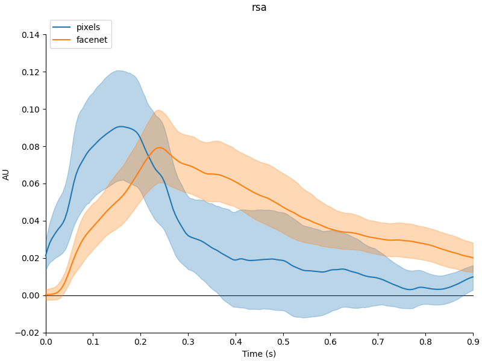
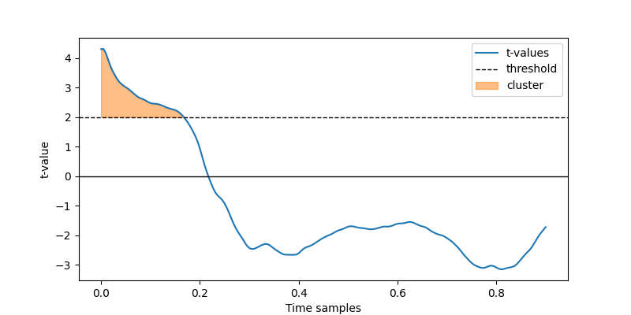
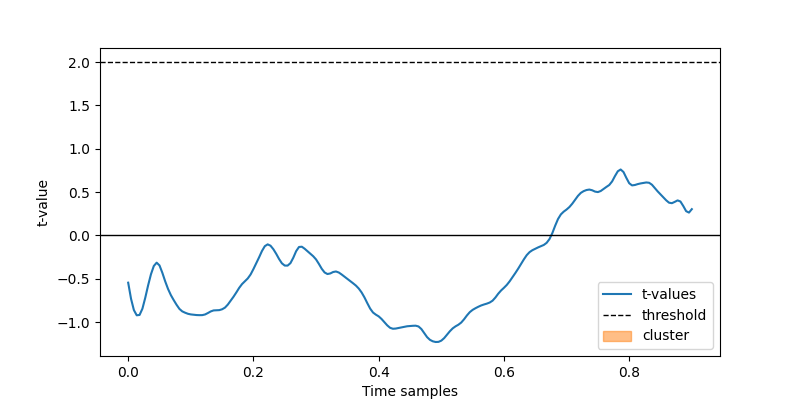
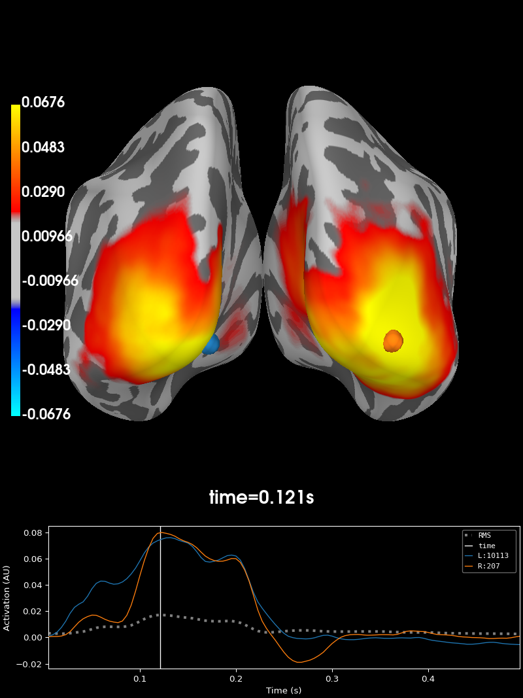
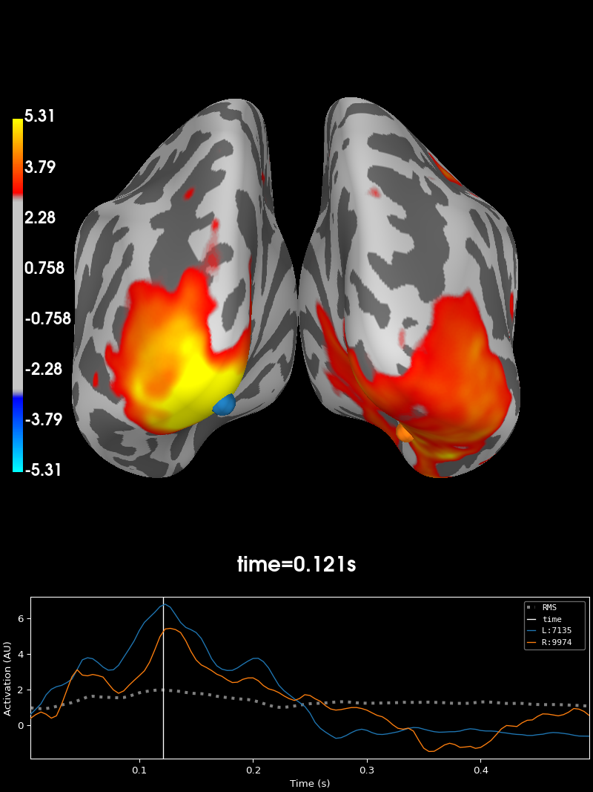
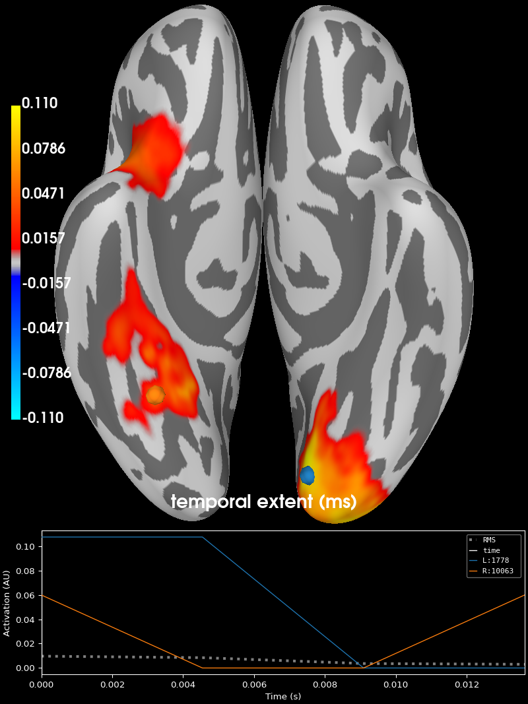

Note
Go to the end to download the full example code.
Tutorial part 3: statistical analysis of group-level RSA results#
In this tutorial, we’ll dive into cluster-based permutation testing for group-level statistical analysis.
The statistical test is described in Maris & Oostenveld, 2007. This functionality is not part of the MNE-RSA package, but rather MNE-Python, but it is a large part of a proper RSA analysis so I figures any decent RSA tutorial should cover this.
Cluster-based permutation testing is becoming the standard “go-to” method for testing for significant differences between experimental conditions in MEG and EEG studies. However, applying the technique correctly is not always straightforward and there are a lot of caveats to beware of. On top of this, the API of MNE-Python regarding these tests could use a bit more work. (If you are inspired by this tutorial, could you lend a hand with this? ❤)
The purpose of cluster-based permutation testing#
When exploring differences between conditions, a good first step is to perform separate t-tests for each channel/sourcepoint/timepoint and visualize them. While this gives you a good feel of where and when significant differences may occur, one cannot always make solid statistical inferences based on these values. Cluster-based permutation testing is designed to solve two problems that arise when using mass t-tests:
The multiple-comparisons problem: solved by using a cluster-based statistic
The non-Gaussian data problem: solved by using random permutations
The solutions to these problems come at a hefty price though: the test can only infer the data is different between conditions. The test can not be used to infer when and where there is a significant difference. Researchers get this wrong a lot. The Fieldtrip manual even has a dedicated page about this which I encourage you to read.
Now that I’ve scared you enough, let’s do this!
In the cell below, update the data_path variable to point to where you have
extracted the
`rsa-data.zip <wmvanvliet/neuroscience_tutorials>`__
file to.
# ruff: noqa: E402
# sphinx_gallery_thumbnail_number=2
import mne
mne.set_log_level("warning") # Make the output less verbose
# Set this to where you've extracted `rsa-data.zip` to
data_path = "data"
Cluster permutation testing on a single channel#
In the classic EEG event-related potential (ERP) literature, statistical testing between two conditions was done by first identifying one or more sensors and stretches of time that seem likely to hold a significant difference, then averaging the signal across those sensors and time region, followed by a single t-test or ANOVA test. Time would tell whether the chosen channels and time region would replicate across studies.
Let’s do this for our sensor-level RSA result that we obtained in
Tutorial part 1: RSA on sensor-level MEG data. I’ve ran the same analysis across multiple subjects and
placed it in the group_analysis subfolder of the data package you’ve downloaded.
Executing the call below will load them.
import mne
subjects = [2, 3, 4, 6, 7, 8, 9, 10, 11, 12, 13, 14, 15, 17, 18, 19]
# RSA against the RDM based on the pixels in each image
rsa_pixels = [
mne.read_evokeds(
f"{data_path}/group_analysis/sub-{subject:02d}-rsa-ave.fif", condition="pixels"
)
for subject in subjects
]
# RSA against the RDM based on the FaceNet embeddings of each image
rsa_facenet = [
mne.read_evokeds(
f"{data_path}/group_analysis/sub-{subject:02d}-rsa-ave.fif", condition="facenet"
)
for subject in subjects
]
rsa_pixels and rsa_facenet are now lists of mne.Evoked objects. Here
are the first 5 of them:
rsa_pixels[:5]
[<Evoked | 'pixels' (average, N=450), 0 – 0.9 s, baseline off, 1 ch, ~8 KiB>, <Evoked | 'pixels' (average, N=450), 0 – 0.9 s, baseline off, 1 ch, ~8 KiB>, <Evoked | 'pixels' (average, N=450), 0 – 0.9 s, baseline off, 1 ch, ~8 KiB>, <Evoked | 'pixels' (average, N=448), 0 – 0.9 s, baseline off, 1 ch, ~8 KiB>, <Evoked | 'pixels' (average, N=450), 0 – 0.9 s, baseline off, 1 ch, ~8 KiB>]
Every mne.Evoked` object has data defined for a single channel, for the time
region 0 – 0.9 seconds. The cell below compares the grand averages for pixels versus
FaceNet and gives the 95% confidence intervals for the means:
mne.viz.plot_compare_evokeds(
dict(pixels=rsa_pixels, facenet=rsa_facenet),
picks=0,
show_sensors=0,
ylim=dict(misc=[-0.02, 0.15]),
)

[<Figure size 800x600 with 1 Axes>]
Based on the above plot, there might be a significant difference very early on: 0 – 0.16 seconds. Let’s run a t-test in this time-window.
import numpy as np
from scipy.stats import ttest_rel
# Construct arrays with the data of all participants combined
data_pixels = np.array(
[ev.data[0] for ev in rsa_pixels]
) # shape: 16 x 199 (participants x timepoints)
data_facenet = np.array(
[ev.data[0] for ev in rsa_facenet]
) # shape: 16 x 199 (participants x timepoints)
# Time region we are interested in
tmin, tmax = 0, 0.16 # seconds
# Convert tmin/tmax to sample indices
tmin, tmax = np.searchsorted(rsa_pixels[0].times, [tmin, tmax])
# Average the data across the time window
data_pixels_avg = data_pixels[:, tmin:tmax].mean(axis=1)
data_facenet_avg = data_facenet[:, tmin:tmax].mean(axis=1)
# Perform the t-test
tval, pval = ttest_rel(data_pixels_avg, data_facenet_avg)
assert np.isscalar(tval), "We want a single t-value"
assert np.isscalar(pval), "We want a single p-value"
assert pval < 0.05, f"p-value is not significant {pval=}"
print(f"{tval=}, {pval=} Looking great! 😊")
tval=np.float64(2.9768295878272895), pval=np.float64(0.009406024901266791) Looking great! 😊
The “cluster” part of cluster permutation tests#
In essence, the permutation cluster test automates what we’ve just done above, but with a twist that we will get to later.
First, it must determine “clusters”, i.e. regions of interest where
there might be a significant difference between the conditions. We
eyeballed this based on the confidence interval of the mean, but the
algorithm must use some form of automated function. We can specify the
function that the algorithm should use, but it comes with a useful
default: a t-test: mne.stats.ttest_1samp_no_p()
Let’s do this step manually first, so you get an understanding what is going on: -
First, we do the t-test for every timepoint - This is a t-test against 0. To perform a
paired t-test, we test data_pixels - data_facenet - Then, we set a threshold -
Everything above the threshold becomes a cluster - We compute the sum of all the
t-values inside the cluster
import matplotlib.pyplot as plt
from mne.stats import ttest_1samp_no_p
tvals = ttest_1samp_no_p(data_pixels - data_facenet)
# Plot the t-values and form a cluster
def plot_cluster(tvals, threshold, data_cond1, data_cond2):
"""Plot a cluster."""
times = rsa_pixels[0].times
# Make the cluster
cluster = np.where(tvals > threshold)[0]
# This is an important statistec: the sum of all t-values in the cluster
cluster_tvals_sum = tvals[cluster].sum()
# Show the t-values and how the cluster is determined
plt.figure(figsize=(8, 4))
plt.plot(times, tvals, label="t-values")
plt.axhline(0, color="black", linewidth=1)
plt.axhline(2, color="black", linestyle="--", linewidth=1, label="threshold")
plt.fill_between(
times[cluster],
tvals[cluster],
threshold * np.ones(len(cluster)),
color="C1",
alpha=0.5,
label="cluster",
)
plt.legend()
plt.xlabel("Time samples")
plt.ylabel("t-value")
return cluster_tvals_sum
cluster_tvals_sum = plot_cluster(
tvals, threshold=2, data_cond1=data_pixels, data_cond2=data_facenet
)
print(f"Sum of t-values in the cluster: {cluster_tvals_sum:.3f}")

Sum of t-values in the cluster: 105.259
Based on the figure above, a threshold value of 2 seems to obtain a reasonable
cluster. We could have chosen a different threshold, and there is no reason to choose
a threshold that corresponds to some p-value, other than perhaps providing a sensible
default value. The statistical function and the threshold used to form clusters are
completely up to the researcher. The idea here is to use your domain knowledge to
increase statistical power: when clusters “make sense” regarding to what we know about
the experimental setup and how MEG data behaves, we are likely to obtain better
p-values in the end.
The “permutation” part of the cluster permutation test#
Now that we have our cluster, we can “permute” it to find what random clusters looks like. In order to generate random clusters, we mix up the class labels. Read the code in the cell below carefully to find out how this is done:
# Throw the data onto one big pile
big_pile = np.vstack((data_pixels, data_facenet))
# Shuffle the rows. This is what a "random permutation" means.
np.random.shuffle(big_pile)
# Divide again into the "pixels" and "facenet" conditions
permuted_pixels, permuted_facenet = big_pile[: len(subjects)], big_pile[len(subjects) :]
# Compute t-values, which should be nice and low
permuted_tvals = ttest_1samp_no_p(permuted_pixels - permuted_facenet)
# See what the clusters look like now
permuted_cluster_tvals_sum = plot_cluster(
permuted_tvals, threshold=2, data_cond1=permuted_pixels, data_cond2=permuted_facenet
)
print("Sum of t-values in cluster:", permuted_cluster_tvals_sum.round(3))

Sum of t-values in cluster: 0.0
You can run the cell above multiple times to see what different permutations look like. If it is very rare that we get a cluster with larger max t-value than the one we found in the original data, we can say that there is a significant difference in the original data. Finally, the percentage of times you find a larger max t-value in the randomly permuted data is your p-value.
And that is the cluster permutation test!
So, with all of this in mind, we can now use the MNE-Python
mne.stats.permutation_cluster_1samp_test()
to perform everything we have done above in a single line of code. When
studying the line of code, keep the following in mind:
Read the documentation of
mne.stats.permutation_cluster_1samp_test()first!The first parameter,
Xis your data matrix (n_participants x n_times). Since we are using paired t-tests to define clusters, you need to set this todata_pixels - data_facenetlike we did beforeThe threshold to form clusters is
2like we used before - We settail=1to only look for positive t-values to mimic what we did before. You can also experiment with-1and0to look for clusters with negative t-values or both positive and negative.
from mne.stats import permutation_cluster_1samp_test
t_obs, clusters, pvals, H0 = permutation_cluster_1samp_test(
X=data_pixels - data_facenet, threshold=2, tail=1
)
Executing the cell below will explain what all the return values mean:
times = rsa_pixels[0].times
print(
f"t_obs (an array of length {len(t_obs)}) contains the initial t-values that are "
"used to create the clusters."
)
print(
f"clusters (a list of length {len(clusters)}) contains for each cluster, the "
"indices in the data array that are part of the cluster."
)
print(
f"pvals (an array of length {len(pvals)}) contains for each cluster a p-value, "
"more about this later."
)
print(
f"H0 (an array of length {len(H0)}) contains the largest "
"`permuted_cluster_tvals_sum` found in each random permutation."
)
print()
print(f"The cluster permutation test found {len(clusters)} clusters.")
for i, cluster in enumerate(clusters):
print(
f"Cluster {i}: {times[cluster[0].min()]:.3f}-{times[cluster[0].max()]:.3f} "
"seconds."
)
t_obs (an array of length 199) contains the initial t-values that are used to create the clusters.
clusters (a list of length 1) contains for each cluster, the indices in the data array that are part of the cluster.
pvals (an array of length 1) contains for each cluster a p-value, more about this later.
H0 (an array of length 1024) contains the largest `permuted_cluster_tvals_sum` found in each random permutation.
The cluster permutation test found 1 clusters.
Cluster 0: 0.000-0.164 seconds.
Computing the p-value#
Depending on the value of tail you used in your call to
mne.stats.permutation_cluster_1samp_test() you have either 1, 2, or 3 clusters.
The clusters that your test found each have an associated p-value.
If the sum-of-t-values for the cluster was positive, then the p-value is the fraction of random permutations that produced a cluster which a sum-of-t-values that was equal or greater
If the sum-of-t-values for the cluster was negative, then the p-value is the fraction of random permutations that produced a cluster which a sum-of-t-values that was equal or smaller
To understand this better, lets use the t_obs, clusters and H0 return
values that you produced above to compute this p-value ourselves to test our knowledge
of what these return values mean. We will:
Loop over all the clusters you found
Determine the
sum_of_t_valuesinside the clusterCompute the fraction of
H0whose absolute value is equal or larger than the absolutesum_of_t_values
The cluster p-values should be: [0.04980469]
Our manually computed cluster p-values are: [np.float64(0.0498046875)]
Interpreting the p-value#
Now comes the twist that I mentioned in the beginning. The final part of the cluster permutation test is that you use the smallest cluster p-value as final outcome of the test. You might be tempted to judge the significance of each cluster separately based on its associated p-value, but that would be statistically incorrect.
So what can you do? Sassenhagen & Draschkow 2019 offer some good advice. Personally, I would go for something like:
The cluster-based permutation test revealed a significant difference between the conditions (p=SMALLEST_P_VALUE). This result was mostly driven by clusters at X (CLUSTER_PVAL) and Y (CLUSTER_PVAL), which correspond roughly to DESCRIPTION_OF_ROIS”.
Clusters across space and time#
The formation of clusters becomes a bit more tricky in the case of
mne.SourceEstimate objects, where data is defines across vertices in space as
well as samples in time.
In this case, the first order of business is to morph everything to a template brain, so that the vertices are aligned. This is common practice in MEG group analysis, so I’m not going to cover that process in this tutorial.
Instead, I have run the spatio-temporal RSA analysis that we did
Tutorial part 2: RSA on source-level MEG data across multiple subjects and placed the results in the
group_analysis folder of your data package. Let’s load them and see if we can run
a spatio-temporal cluster-based permutation test (quite a mouthful).
from mne import read_source_estimate
stc_pixels = [
read_source_estimate(
f"{data_path}/group_analysis/sub-{subject:02d}-rsa-pixels-morphed"
)
for subject in subjects
]
stc_facenet = [
read_source_estimate(
f"{data_path}/group_analysis/sub-{subject:02d}-rsa-facenet-morphed"
)
for subject in subjects
]
Now, stc_pixels and stc_facenet are two lists containing the
mne.SourceEstimate’s for all subjects. Here are 5 of them:
stc_pixels[:5]
[<SourceEstimate | 20484 vertices, tmin : 4.545454502105713 (ms), tmax : 495.45454072952265 (ms), tstep : 4.545454502105713 (ms), data shape : (20484, 109), ~8.7 MiB>, <SourceEstimate | 20484 vertices, tmin : 4.545454502105713 (ms), tmax : 495.45454072952265 (ms), tstep : 4.545454502105713 (ms), data shape : (20484, 109), ~8.7 MiB>, <SourceEstimate | 20484 vertices, tmin : 4.545454502105713 (ms), tmax : 495.45454072952265 (ms), tstep : 4.545454502105713 (ms), data shape : (20484, 109), ~8.7 MiB>, <SourceEstimate | 20484 vertices, tmin : 4.545454502105713 (ms), tmax : 495.45454072952265 (ms), tstep : 4.545454502105713 (ms), data shape : (20484, 109), ~8.7 MiB>, <SourceEstimate | 20484 vertices, tmin : 4.545454502105713 (ms), tmax : 495.45454072952265 (ms), tstep : 4.545454502105713 (ms), data shape : (20484, 109), ~8.7 MiB>]
Let’s proceed as before by first looking at the difference between the
means of the two conditions. A neat feature of the
mne.SourceEstimate
class is that it supports common math operations such as +, -,
* and /. For example, computing the difference between the
pixels and facenet RSA results of the first subject can simply
be computed as stc_diff = stc_pixels[0] - stc_facenet[0]. In the
cell below, we compute the difference between the two conditions in a
pairwise manner for each subject, then compute the mean across the
pairwise differences. If you want a nice elegant way to write this,
remember that the
`zip() <https://docs.python.org/3/library/functions.html#zip>`__
function exists.
stc_pairwise_diff = np.mean(
[stc1 - stc2 for stc1, stc2 in zip(stc_pixels, stc_facenet)]
)
# Visualize the result.
stc_pairwise_diff.plot(
"fsaverage",
subjects_dir=f"{data_path}/freesurfer",
hemi="both",
initial_time=0.121,
views="caudal",
)

<mne.viz._brain._brain.Brain object at 0x7f24c4835640>
The figure shows us clear differences between the pixel versus FaceNet RSA scores across the visual cortex.
Let’s explore this difference with a t-value map. In order to compute t-values, we
need to pull the data out of the mne.SourceEstimate objects. As before, since
we have a within-subject contrast between the two conditions, we want to perform
pairwise tests. So, as a first step, create a data array X of shape
(n_participants x n_vertices x n_times) where each slice i along the first
dimension is the difference between stc_pixels[i].data - stc_facenet[i].data. The
next step is running X through the mne.stats.ttest_1samp_no_p() function to
obtain t-values.
from mne.stats import ttest_1samp_no_p
X = np.array([stc1.data - stc2.data for stc1, stc2 in zip(stc_pixels, stc_facenet)])
tvals = ttest_1samp_no_p(X)
# Some sanity checks for our result
assert X.shape == (16, 20484, 109), "Your `X` array has the wrong shape. 🤔"
assert -0.17 < X.min() < -0.16, "Your `X` array does not have the correct values. 🤔"
assert 0.29 < X.max() < 0.30, "Your `X` array does not have the correct values. 🤔"
assert tvals.shape == (20484, 109), "Your `tvals` array has the wrong shape. 🤔"
assert -6.6 < tvals.min() < -6.5, (
"Your `tvals` array does not have the correct values. 🤔"
)
assert 7.4 < tvals.max() < 7.5, (
"Your `tvals` array does not have the correct values. 🤔"
)
print("All good! 😊")
All good! 😊
Now we can pack the tvals into a new mne.SourceEstimate object in order
to visualize them:
stc_tvals = mne.SourceEstimate(
data=tvals,
vertices=stc_pixels[0].vertices,
tmin=stc_pixels[0].tmin,
tstep=stc_pixels[0].tstep,
subject="fsaverage",
)
stc_tvals.plot(
"fsaverage",
subjects_dir=f"{data_path}/freesurfer",
hemi="both",
initial_time=0.121,
views="caudal",
)

<mne.viz._brain._brain.Brain object at 0x7f24c48772c0>
From this figure, it seems that setting a threshold of 4 may result in useful
clusters for our cluster-based permutation test. The function to perform the test in
both space and time is called mne.stats.spatio_temporal_cluster_1samp_test()
But wait! Before you go and run the test, there’s two things we need to take care of.
The other thing to keep in mind is that in order to form clusters across the cortex,
we need to make sure that only neighbouring vertices are part of the same cluster.
This is a similar problem as we faced when computing searchlight patches in space
during our RSA analysis. The solution is found within the mne.SourceSpaces
object that keeps track of the distances between source points. Since all of our data
has been morphed to the fsaverage template brain, we need to load the
mne.SourceSpaces object for that brain. Then, we can compute the spatial
adjacency matrix from the mne.SourceSpaces object through the
mne.spatial_src_adjacency() function.
src = mne.read_source_spaces(
f"{data_path}/freesurfer/fsaverage/bem/fsaverage-ico-5-src.fif"
)
adj = mne.spatial_src_adjacency(src)
assert adj.shape == (20484, 20484), "You've `adj` seems to have the wrong shape. 🤔"
print("All good! 😊")
All good! 😊
Now it’s time to run the big spatio-temporal cluster-based permutation test! Read its documentation first (:func:`mne.stats.spatio_temporal_cluster_1samp_test) and then go for it!
from mne.stats import spatio_temporal_cluster_1samp_test
t_obs, clusters, pvals, H0 = spatio_temporal_cluster_1samp_test(
X.transpose(0, 2, 1), threshold=4, tail=1, adjacency=adj, n_jobs=-1, verbose=True
)
# What is the smallest cluster p-value that we found? Was it significant? (p < 0.05?)
print("Smallest p-value:", pvals.min())
if pvals.min() < 0.05:
print("It was significant! 🎉")
else:
print("It was not significant 🤔")
stat_fun(H1): min=-6.571207046508789 max=7.4570088386535645
Running initial clustering …
Found 99 clusters
0%| | Permuting : 0/1023 [00:00<?, ?it/s]
0%| | Permuting : 1/1023 [00:03<1:04:09, 3.77s/it]
0%| | Permuting : 2/1023 [00:04<34:16, 2.01s/it]
0%| | Permuting : 3/1023 [00:04<24:44, 1.46s/it]
0%| | Permuting : 4/1023 [00:04<18:33, 1.09s/it]
0%| | Permuting : 5/1023 [00:04<15:41, 1.08it/s]
1%| | Permuting : 6/1023 [00:05<12:56, 1.31it/s]
1%| | Permuting : 7/1023 [00:05<11:44, 1.44it/s]
1%| | Permuting : 8/1023 [00:05<10:24, 1.63it/s]
1%| | Permuting : 9/1023 [00:05<09:17, 1.82it/s]
1%| | Permuting : 10/1023 [00:05<08:16, 2.04it/s]
1%| | Permuting : 11/1023 [00:05<07:38, 2.21it/s]
1%| | Permuting : 12/1023 [00:06<06:59, 2.41it/s]
1%|▏ | Permuting : 13/1023 [00:06<06:29, 2.59it/s]
1%|▏ | Permuting : 14/1023 [00:06<06:11, 2.72it/s]
1%|▏ | Permuting : 15/1023 [00:06<05:49, 2.89it/s]
2%|▏ | Permuting : 16/1023 [00:06<05:23, 3.11it/s]
2%|▏ | Permuting : 17/1023 [00:06<05:13, 3.21it/s]
2%|▏ | Permuting : 18/1023 [00:06<04:58, 3.37it/s]
2%|▏ | Permuting : 19/1023 [00:06<04:39, 3.60it/s]
2%|▏ | Permuting : 20/1023 [00:07<04:33, 3.67it/s]
2%|▏ | Permuting : 21/1023 [00:07<04:22, 3.82it/s]
2%|▏ | Permuting : 22/1023 [00:07<04:07, 4.04it/s]
2%|▏ | Permuting : 23/1023 [00:07<03:56, 4.22it/s]
2%|▏ | Permuting : 24/1023 [00:07<03:47, 4.40it/s]
3%|▎ | Permuting : 26/1023 [00:07<03:28, 4.79it/s]
3%|▎ | Permuting : 27/1023 [00:07<03:21, 4.95it/s]
3%|▎ | Permuting : 28/1023 [00:07<03:14, 5.11it/s]
3%|▎ | Permuting : 29/1023 [00:08<03:10, 5.21it/s]
3%|▎ | Permuting : 30/1023 [00:08<03:05, 5.37it/s]
3%|▎ | Permuting : 31/1023 [00:08<02:55, 5.65it/s]
3%|▎ | Permuting : 33/1023 [00:08<02:50, 5.80it/s]
3%|▎ | Permuting : 34/1023 [00:08<02:44, 6.01it/s]
3%|▎ | Permuting : 35/1023 [00:08<02:46, 5.94it/s]
4%|▎ | Permuting : 36/1023 [00:08<02:44, 6.00it/s]
4%|▎ | Permuting : 38/1023 [00:08<02:28, 6.63it/s]
4%|▍ | Permuting : 39/1023 [00:09<02:32, 6.44it/s]
4%|▍ | Permuting : 40/1023 [00:09<02:31, 6.48it/s]
4%|▍ | Permuting : 41/1023 [00:09<02:25, 6.75it/s]
4%|▍ | Permuting : 42/1023 [00:09<02:21, 6.95it/s]
4%|▍ | Permuting : 43/1023 [00:09<02:20, 6.97it/s]
4%|▍ | Permuting : 44/1023 [00:09<02:21, 6.91it/s]
4%|▍ | Permuting : 46/1023 [00:09<02:09, 7.56it/s]
5%|▍ | Permuting : 47/1023 [00:09<02:12, 7.37it/s]
5%|▍ | Permuting : 49/1023 [00:10<02:10, 7.47it/s]
5%|▍ | Permuting : 50/1023 [00:10<02:08, 7.55it/s]
5%|▍ | Permuting : 51/1023 [00:10<02:07, 7.64it/s]
5%|▌ | Permuting : 52/1023 [00:10<02:07, 7.62it/s]
5%|▌ | Permuting : 53/1023 [00:10<02:02, 7.90it/s]
5%|▌ | Permuting : 54/1023 [00:10<02:06, 7.68it/s]
5%|▌ | Permuting : 55/1023 [00:10<02:01, 7.96it/s]
5%|▌ | Permuting : 56/1023 [00:10<02:01, 7.93it/s]
6%|▌ | Permuting : 57/1023 [00:10<01:57, 8.22it/s]
6%|▌ | Permuting : 58/1023 [00:11<02:01, 7.97it/s]
6%|▌ | Permuting : 59/1023 [00:11<01:56, 8.26it/s]
6%|▌ | Permuting : 60/1023 [00:11<02:00, 8.00it/s]
6%|▌ | Permuting : 61/1023 [00:11<01:56, 8.28it/s]
6%|▌ | Permuting : 62/1023 [00:11<01:55, 8.35it/s]
6%|▌ | Permuting : 63/1023 [00:11<01:50, 8.65it/s]
6%|▋ | Permuting : 64/1023 [00:11<01:53, 8.46it/s]
6%|▋ | Permuting : 65/1023 [00:11<01:52, 8.52it/s]
6%|▋ | Permuting : 66/1023 [00:11<01:51, 8.58it/s]
7%|▋ | Permuting : 67/1023 [00:12<01:52, 8.52it/s]
7%|▋ | Permuting : 68/1023 [00:12<01:48, 8.81it/s]
7%|▋ | Permuting : 69/1023 [00:12<01:47, 8.86it/s]
7%|▋ | Permuting : 70/1023 [00:12<01:48, 8.78it/s]
7%|▋ | Permuting : 71/1023 [00:12<01:49, 8.70it/s]
7%|▋ | Permuting : 72/1023 [00:12<01:45, 9.01it/s]
7%|▋ | Permuting : 73/1023 [00:12<01:44, 9.05it/s]
7%|▋ | Permuting : 74/1023 [00:12<01:44, 9.09it/s]
7%|▋ | Permuting : 76/1023 [00:12<01:40, 9.42it/s]
8%|▊ | Permuting : 77/1023 [00:13<01:43, 9.17it/s]
8%|▊ | Permuting : 78/1023 [00:13<01:42, 9.21it/s]
8%|▊ | Permuting : 79/1023 [00:13<01:45, 8.96it/s]
8%|▊ | Permuting : 80/1023 [00:13<01:41, 9.27it/s]
8%|▊ | Permuting : 81/1023 [00:13<01:44, 9.03it/s]
8%|▊ | Permuting : 82/1023 [00:13<01:40, 9.34it/s]
8%|▊ | Permuting : 83/1023 [00:13<01:40, 9.36it/s]
8%|▊ | Permuting : 84/1023 [00:13<01:41, 9.25it/s]
8%|▊ | Permuting : 85/1023 [00:13<01:44, 9.01it/s]
8%|▊ | Permuting : 86/1023 [00:14<01:42, 9.17it/s]
9%|▊ | Permuting : 87/1023 [00:14<01:38, 9.49it/s]
9%|▊ | Permuting : 88/1023 [00:14<01:36, 9.65it/s]
9%|▊ | Permuting : 89/1023 [00:14<01:41, 9.23it/s]
9%|▉ | Permuting : 90/1023 [00:14<01:39, 9.40it/s]
9%|▉ | Permuting : 91/1023 [00:14<01:35, 9.72it/s]
9%|▉ | Permuting : 92/1023 [00:14<01:37, 9.58it/s]
9%|▉ | Permuting : 94/1023 [00:14<01:36, 9.61it/s]
9%|▉ | Permuting : 95/1023 [00:14<01:36, 9.62it/s]
9%|▉ | Permuting : 96/1023 [00:15<01:40, 9.21it/s]
9%|▉ | Permuting : 97/1023 [00:15<01:38, 9.37it/s]
10%|▉ | Permuting : 98/1023 [00:15<01:35, 9.68it/s]
10%|▉ | Permuting : 99/1023 [00:15<01:38, 9.41it/s]
10%|▉ | Permuting : 100/1023 [00:15<01:39, 9.28it/s]
10%|▉ | Permuting : 101/1023 [00:15<01:36, 9.59it/s]
10%|▉ | Permuting : 102/1023 [00:15<01:32, 9.91it/s]
10%|█ | Permuting : 103/1023 [00:15<01:34, 9.76it/s]
10%|█ | Permuting : 104/1023 [00:15<01:41, 9.05it/s]
10%|█ | Permuting : 107/1023 [00:16<01:32, 9.95it/s]
11%|█ | Permuting : 108/1023 [00:16<01:38, 9.27it/s]
11%|█ | Permuting : 110/1023 [00:16<01:35, 9.58it/s]
11%|█ | Permuting : 111/1023 [00:16<01:32, 9.86it/s]
11%|█ | Permuting : 112/1023 [00:16<01:36, 9.45it/s]
11%|█ | Permuting : 113/1023 [00:16<01:37, 9.34it/s]
11%|█ | Permuting : 115/1023 [00:16<01:31, 9.91it/s]
11%|█▏ | Permuting : 116/1023 [00:17<01:36, 9.38it/s]
11%|█▏ | Permuting : 117/1023 [00:17<01:36, 9.40it/s]
12%|█▏ | Permuting : 119/1023 [00:17<01:29, 10.10it/s]
12%|█▏ | Permuting : 120/1023 [00:17<01:34, 9.55it/s]
12%|█▏ | Permuting : 122/1023 [00:17<01:30, 9.96it/s]
12%|█▏ | Permuting : 123/1023 [00:17<01:29, 10.09it/s]
12%|█▏ | Permuting : 124/1023 [00:17<01:32, 9.68it/s]
12%|█▏ | Permuting : 126/1023 [00:17<01:30, 9.95it/s]
12%|█▏ | Permuting : 127/1023 [00:18<01:30, 9.95it/s]
13%|█▎ | Permuting : 128/1023 [00:18<01:33, 9.56it/s]
13%|█▎ | Permuting : 129/1023 [00:18<01:32, 9.70it/s]
13%|█▎ | Permuting : 130/1023 [00:18<01:29, 9.98it/s]
13%|█▎ | Permuting : 131/1023 [00:18<01:26, 10.26it/s]
13%|█▎ | Permuting : 132/1023 [00:18<01:32, 9.67it/s]
13%|█▎ | Permuting : 133/1023 [00:18<01:31, 9.68it/s]
13%|█▎ | Permuting : 134/1023 [00:18<01:29, 9.97it/s]
13%|█▎ | Permuting : 135/1023 [00:18<01:26, 10.26it/s]
13%|█▎ | Permuting : 136/1023 [00:18<01:29, 9.95it/s]
13%|█▎ | Permuting : 137/1023 [00:19<01:31, 9.66it/s]
13%|█▎ | Permuting : 138/1023 [00:19<01:28, 9.96it/s]
14%|█▎ | Permuting : 139/1023 [00:19<01:26, 10.25it/s]
14%|█▎ | Permuting : 140/1023 [00:19<01:27, 10.08it/s]
14%|█▍ | Permuting : 141/1023 [00:19<01:30, 9.78it/s]
14%|█▍ | Permuting : 142/1023 [00:19<01:27, 10.08it/s]
14%|█▍ | Permuting : 143/1023 [00:19<01:24, 10.38it/s]
14%|█▍ | Permuting : 145/1023 [00:19<01:27, 10.04it/s]
14%|█▍ | Permuting : 146/1023 [00:19<01:27, 10.03it/s]
14%|█▍ | Permuting : 147/1023 [00:20<01:24, 10.33it/s]
14%|█▍ | Permuting : 148/1023 [00:20<01:31, 9.58it/s]
15%|█▍ | Permuting : 149/1023 [00:20<01:28, 9.87it/s]
15%|█▍ | Permuting : 150/1023 [00:20<01:27, 10.02it/s]
15%|█▍ | Permuting : 151/1023 [00:20<01:25, 10.16it/s]
15%|█▍ | Permuting : 153/1023 [00:20<01:25, 10.14it/s]
15%|█▌ | Permuting : 154/1023 [00:20<01:24, 10.28it/s]
15%|█▌ | Permuting : 155/1023 [00:20<01:27, 9.96it/s]
15%|█▌ | Permuting : 157/1023 [00:21<01:25, 10.10it/s]
15%|█▌ | Permuting : 158/1023 [00:21<01:23, 10.39it/s]
16%|█▌ | Permuting : 159/1023 [00:21<01:25, 10.06it/s]
16%|█▌ | Permuting : 160/1023 [00:21<01:28, 9.77it/s]
16%|█▌ | Permuting : 161/1023 [00:21<01:25, 10.06it/s]
16%|█▌ | Permuting : 162/1023 [00:21<01:24, 10.20it/s]
16%|█▌ | Permuting : 163/1023 [00:21<01:26, 9.89it/s]
16%|█▌ | Permuting : 164/1023 [00:21<01:26, 9.89it/s]
16%|█▌ | Permuting : 165/1023 [00:21<01:26, 9.88it/s]
16%|█▌ | Permuting : 166/1023 [00:21<01:24, 10.18it/s]
16%|█▋ | Permuting : 167/1023 [00:22<01:25, 10.02it/s]
17%|█▋ | Permuting : 169/1023 [00:22<01:24, 10.15it/s]
17%|█▋ | Permuting : 170/1023 [00:22<01:22, 10.29it/s]
17%|█▋ | Permuting : 171/1023 [00:22<01:24, 10.12it/s]
17%|█▋ | Permuting : 173/1023 [00:22<01:24, 10.10it/s]
17%|█▋ | Permuting : 174/1023 [00:22<01:21, 10.39it/s]
17%|█▋ | Permuting : 175/1023 [00:22<01:21, 10.37it/s]
17%|█▋ | Permuting : 177/1023 [00:23<01:24, 10.03it/s]
17%|█▋ | Permuting : 178/1023 [00:23<01:21, 10.32it/s]
17%|█▋ | Permuting : 179/1023 [00:23<01:21, 10.30it/s]
18%|█▊ | Permuting : 180/1023 [00:23<01:26, 9.71it/s]
18%|█▊ | Permuting : 181/1023 [00:23<01:24, 10.00it/s]
18%|█▊ | Permuting : 183/1023 [00:23<01:21, 10.27it/s]
18%|█▊ | Permuting : 184/1023 [00:23<01:26, 9.70it/s]
18%|█▊ | Permuting : 185/1023 [00:23<01:26, 9.71it/s]
18%|█▊ | Permuting : 186/1023 [00:23<01:23, 9.99it/s]
18%|█▊ | Permuting : 187/1023 [00:23<01:21, 10.28it/s]
18%|█▊ | Permuting : 188/1023 [00:24<01:26, 9.69it/s]
19%|█▊ | Permuting : 190/1023 [00:24<01:22, 10.11it/s]
19%|█▊ | Permuting : 191/1023 [00:24<01:20, 10.39it/s]
19%|█▉ | Permuting : 192/1023 [00:24<01:24, 9.80it/s]
19%|█▉ | Permuting : 194/1023 [00:24<01:21, 10.21it/s]
19%|█▉ | Permuting : 195/1023 [00:24<01:21, 10.20it/s]
19%|█▉ | Permuting : 196/1023 [00:25<01:24, 9.77it/s]
19%|█▉ | Permuting : 198/1023 [00:25<01:19, 10.33it/s]
19%|█▉ | Permuting : 199/1023 [00:25<01:19, 10.30it/s]
20%|█▉ | Permuting : 200/1023 [00:25<01:23, 9.87it/s]
20%|█▉ | Permuting : 201/1023 [00:25<01:22, 10.01it/s]
20%|█▉ | Permuting : 202/1023 [00:25<01:19, 10.28it/s]
20%|█▉ | Permuting : 203/1023 [00:25<01:21, 10.12it/s]
20%|█▉ | Permuting : 204/1023 [00:25<01:22, 9.97it/s]
20%|██ | Permuting : 205/1023 [00:25<01:22, 9.96it/s]
20%|██ | Permuting : 206/1023 [00:25<01:19, 10.25it/s]
20%|██ | Permuting : 207/1023 [00:25<01:19, 10.23it/s]
20%|██ | Permuting : 208/1023 [00:26<01:22, 9.92it/s]
20%|██ | Permuting : 209/1023 [00:26<01:19, 10.21it/s]
21%|██ | Permuting : 210/1023 [00:26<01:17, 10.51it/s]
21%|██ | Permuting : 211/1023 [00:26<01:19, 10.17it/s]
21%|██ | Permuting : 212/1023 [00:26<01:23, 9.71it/s]
21%|██ | Permuting : 213/1023 [00:26<01:20, 10.01it/s]
21%|██ | Permuting : 214/1023 [00:26<01:18, 10.32it/s]
21%|██ | Permuting : 215/1023 [00:26<01:18, 10.30it/s]
21%|██ | Permuting : 216/1023 [00:26<01:22, 9.81it/s]
21%|██ | Permuting : 217/1023 [00:27<01:19, 10.12it/s]
21%|██▏ | Permuting : 218/1023 [00:27<01:17, 10.43it/s]
21%|██▏ | Permuting : 219/1023 [00:27<01:20, 9.93it/s]
22%|██▏ | Permuting : 220/1023 [00:27<01:22, 9.77it/s]
22%|██▏ | Permuting : 221/1023 [00:27<01:19, 10.08it/s]
22%|██▏ | Permuting : 222/1023 [00:27<01:19, 10.07it/s]
22%|██▏ | Permuting : 223/1023 [00:27<01:21, 9.76it/s]
22%|██▏ | Permuting : 224/1023 [00:27<01:19, 10.07it/s]
22%|██▏ | Permuting : 225/1023 [00:27<01:19, 10.05it/s]
22%|██▏ | Permuting : 226/1023 [00:27<01:19, 10.05it/s]
22%|██▏ | Permuting : 227/1023 [00:28<01:20, 9.89it/s]
22%|██▏ | Permuting : 228/1023 [00:28<01:17, 10.21it/s]
22%|██▏ | Permuting : 229/1023 [00:28<01:19, 10.02it/s]
22%|██▏ | Permuting : 230/1023 [00:28<01:21, 9.70it/s]
23%|██▎ | Permuting : 231/1023 [00:28<01:18, 10.03it/s]
23%|██▎ | Permuting : 232/1023 [00:28<01:17, 10.19it/s]
23%|██▎ | Permuting : 233/1023 [00:28<01:16, 10.33it/s]
23%|██▎ | Permuting : 234/1023 [00:28<01:20, 9.82it/s]
23%|██▎ | Permuting : 235/1023 [00:28<01:18, 9.99it/s]
23%|██▎ | Permuting : 236/1023 [00:28<01:17, 10.14it/s]
23%|██▎ | Permuting : 237/1023 [00:28<01:15, 10.47it/s]
23%|██▎ | Permuting : 238/1023 [00:29<01:19, 9.94it/s]
23%|██▎ | Permuting : 239/1023 [00:29<01:17, 10.08it/s]
23%|██▎ | Permuting : 240/1023 [00:29<01:17, 10.08it/s]
24%|██▎ | Permuting : 241/1023 [00:29<01:15, 10.41it/s]
24%|██▎ | Permuting : 242/1023 [00:29<01:20, 9.73it/s]
24%|██▍ | Permuting : 244/1023 [00:29<01:15, 10.38it/s]
24%|██▍ | Permuting : 245/1023 [00:29<01:13, 10.52it/s]
24%|██▍ | Permuting : 246/1023 [00:29<01:19, 9.83it/s]
24%|██▍ | Permuting : 247/1023 [00:30<01:20, 9.68it/s]
24%|██▍ | Permuting : 249/1023 [00:30<01:13, 10.47it/s]
24%|██▍ | Permuting : 250/1023 [00:30<01:18, 9.82it/s]
25%|██▍ | Permuting : 251/1023 [00:30<01:17, 9.97it/s]
25%|██▍ | Permuting : 252/1023 [00:30<01:16, 10.11it/s]
25%|██▍ | Permuting : 253/1023 [00:30<01:13, 10.43it/s]
25%|██▍ | Permuting : 254/1023 [00:30<01:18, 9.78it/s]
25%|██▍ | Permuting : 255/1023 [00:30<01:16, 10.07it/s]
25%|██▌ | Permuting : 256/1023 [00:30<01:14, 10.23it/s]
25%|██▌ | Permuting : 257/1023 [00:30<01:12, 10.55it/s]
25%|██▌ | Permuting : 258/1023 [00:31<01:21, 9.43it/s]
25%|██▌ | Permuting : 259/1023 [00:31<01:18, 9.74it/s]
26%|██▌ | Permuting : 261/1023 [00:31<01:12, 10.53it/s]
26%|██▌ | Permuting : 262/1023 [00:31<01:20, 9.44it/s]
26%|██▌ | Permuting : 263/1023 [00:31<01:18, 9.74it/s]
26%|██▌ | Permuting : 264/1023 [00:31<01:15, 10.05it/s]
26%|██▌ | Permuting : 265/1023 [00:31<01:14, 10.20it/s]
26%|██▌ | Permuting : 266/1023 [00:32<01:20, 9.44it/s]
26%|██▌ | Permuting : 267/1023 [00:32<01:17, 9.74it/s]
26%|██▌ | Permuting : 268/1023 [00:32<01:15, 10.06it/s]
26%|██▋ | Permuting : 269/1023 [00:32<01:13, 10.21it/s]
26%|██▋ | Permuting : 270/1023 [00:32<01:19, 9.43it/s]
26%|██▋ | Permuting : 271/1023 [00:32<01:17, 9.74it/s]
27%|██▋ | Permuting : 272/1023 [00:32<01:14, 10.06it/s]
27%|██▋ | Permuting : 273/1023 [00:32<01:12, 10.38it/s]
27%|██▋ | Permuting : 274/1023 [00:32<01:18, 9.57it/s]
27%|██▋ | Permuting : 275/1023 [00:32<01:15, 9.88it/s]
27%|██▋ | Permuting : 276/1023 [00:32<01:14, 10.04it/s]
27%|██▋ | Permuting : 277/1023 [00:32<01:11, 10.37it/s]
27%|██▋ | Permuting : 279/1023 [00:33<01:13, 10.15it/s]
27%|██▋ | Permuting : 280/1023 [00:33<01:12, 10.30it/s]
27%|██▋ | Permuting : 281/1023 [00:33<01:12, 10.28it/s]
28%|██▊ | Permuting : 282/1023 [00:33<01:15, 9.80it/s]
28%|██▊ | Permuting : 283/1023 [00:33<01:13, 10.10it/s]
28%|██▊ | Permuting : 284/1023 [00:33<01:10, 10.42it/s]
28%|██▊ | Permuting : 285/1023 [00:33<01:14, 9.91it/s]
28%|██▊ | Permuting : 286/1023 [00:33<01:15, 9.76it/s]
28%|██▊ | Permuting : 287/1023 [00:34<01:14, 9.92it/s]
28%|██▊ | Permuting : 288/1023 [00:34<01:11, 10.23it/s]
28%|██▊ | Permuting : 289/1023 [00:34<01:13, 10.05it/s]
28%|██▊ | Permuting : 290/1023 [00:34<01:15, 9.73it/s]
28%|██▊ | Permuting : 291/1023 [00:34<01:13, 9.90it/s]
29%|██▊ | Permuting : 292/1023 [00:34<01:13, 9.90it/s]
29%|██▊ | Permuting : 293/1023 [00:34<01:12, 10.05it/s]
29%|██▊ | Permuting : 294/1023 [00:34<01:14, 9.73it/s]
29%|██▉ | Permuting : 295/1023 [00:34<01:14, 9.73it/s]
29%|██▉ | Permuting : 296/1023 [00:34<01:14, 9.74it/s]
29%|██▉ | Permuting : 297/1023 [00:35<01:15, 9.60it/s]
29%|██▉ | Permuting : 298/1023 [00:35<01:13, 9.92it/s]
29%|██▉ | Permuting : 299/1023 [00:35<01:14, 9.76it/s]
29%|██▉ | Permuting : 300/1023 [00:35<01:16, 9.46it/s]
29%|██▉ | Permuting : 301/1023 [00:35<01:14, 9.63it/s]
30%|██▉ | Permuting : 302/1023 [00:35<01:12, 9.95it/s]
30%|██▉ | Permuting : 303/1023 [00:35<01:14, 9.64it/s]
30%|██▉ | Permuting : 304/1023 [00:35<01:14, 9.65it/s]
30%|██▉ | Permuting : 305/1023 [00:35<01:16, 9.36it/s]
30%|███ | Permuting : 307/1023 [00:36<01:11, 10.00it/s]
30%|███ | Permuting : 308/1023 [00:36<01:12, 9.84it/s]
30%|███ | Permuting : 309/1023 [00:36<01:14, 9.55it/s]
30%|███ | Permuting : 311/1023 [00:36<01:10, 10.15it/s]
30%|███ | Permuting : 312/1023 [00:36<01:13, 9.70it/s]
31%|███ | Permuting : 313/1023 [00:36<01:15, 9.43it/s]
31%|███ | Permuting : 314/1023 [00:36<01:12, 9.73it/s]
31%|███ | Permuting : 315/1023 [00:36<01:10, 10.03it/s]
31%|███ | Permuting : 316/1023 [00:37<01:12, 9.73it/s]
31%|███ | Permuting : 317/1023 [00:37<01:12, 9.73it/s]
31%|███ | Permuting : 318/1023 [00:37<01:10, 10.04it/s]
31%|███ | Permuting : 319/1023 [00:37<01:11, 9.88it/s]
31%|███▏ | Permuting : 320/1023 [00:37<01:11, 9.87it/s]
31%|███▏ | Permuting : 321/1023 [00:37<01:11, 9.87it/s]
31%|███▏ | Permuting : 322/1023 [00:37<01:08, 10.19it/s]
32%|███▏ | Permuting : 323/1023 [00:37<01:10, 9.86it/s]
32%|███▏ | Permuting : 325/1023 [00:37<01:10, 9.86it/s]
32%|███▏ | Permuting : 326/1023 [00:37<01:08, 10.16it/s]
32%|███▏ | Permuting : 327/1023 [00:38<01:09, 10.00it/s]
32%|███▏ | Permuting : 329/1023 [00:38<01:10, 9.84it/s]
32%|███▏ | Permuting : 330/1023 [00:38<01:08, 10.14it/s]
32%|███▏ | Permuting : 331/1023 [00:38<01:08, 10.13it/s]
33%|███▎ | Permuting : 333/1023 [00:38<01:10, 9.83it/s]
33%|███▎ | Permuting : 334/1023 [00:38<01:09, 9.97it/s]
33%|███▎ | Permuting : 335/1023 [00:38<01:08, 10.11it/s]
33%|███▎ | Permuting : 336/1023 [00:39<01:13, 9.41it/s]
33%|███▎ | Permuting : 337/1023 [00:39<01:10, 9.68it/s]
33%|███▎ | Permuting : 339/1023 [00:39<01:06, 10.27it/s]
33%|███▎ | Permuting : 340/1023 [00:39<01:10, 9.69it/s]
33%|███▎ | Permuting : 341/1023 [00:39<01:10, 9.70it/s]
33%|███▎ | Permuting : 342/1023 [00:39<01:08, 9.99it/s]
34%|███▎ | Permuting : 343/1023 [00:39<01:07, 10.12it/s]
34%|███▎ | Permuting : 344/1023 [00:39<01:09, 9.82it/s]
34%|███▎ | Permuting : 345/1023 [00:39<01:09, 9.82it/s]
34%|███▍ | Permuting : 346/1023 [00:40<01:08, 9.83it/s]
34%|███▍ | Permuting : 347/1023 [00:40<01:06, 10.12it/s]
34%|███▍ | Permuting : 348/1023 [00:40<01:08, 9.82it/s]
34%|███▍ | Permuting : 349/1023 [00:40<01:09, 9.67it/s]
34%|███▍ | Permuting : 350/1023 [00:40<01:08, 9.83it/s]
34%|███▍ | Permuting : 351/1023 [00:40<01:06, 10.13it/s]
34%|███▍ | Permuting : 352/1023 [00:40<01:07, 9.97it/s]
35%|███▍ | Permuting : 353/1023 [00:40<01:10, 9.52it/s]
35%|███▍ | Permuting : 354/1023 [00:40<01:08, 9.82it/s]
35%|███▍ | Permuting : 355/1023 [00:40<01:05, 10.14it/s]
35%|███▍ | Permuting : 356/1023 [00:40<01:04, 10.29it/s]
35%|███▍ | Permuting : 357/1023 [00:41<01:09, 9.65it/s]
35%|███▍ | Permuting : 358/1023 [00:41<01:07, 9.81it/s]
35%|███▌ | Permuting : 359/1023 [00:41<01:05, 10.13it/s]
35%|███▌ | Permuting : 360/1023 [00:41<01:03, 10.43it/s]
35%|███▌ | Permuting : 361/1023 [00:41<01:08, 9.62it/s]
35%|███▌ | Permuting : 362/1023 [00:41<01:07, 9.78it/s]
35%|███▌ | Permuting : 363/1023 [00:41<01:05, 10.10it/s]
36%|███▌ | Permuting : 364/1023 [00:41<01:04, 10.26it/s]
36%|███▌ | Permuting : 365/1023 [00:42<01:09, 9.46it/s]
36%|███▌ | Permuting : 366/1023 [00:42<01:07, 9.77it/s]
36%|███▌ | Permuting : 367/1023 [00:42<01:06, 9.94it/s]
36%|███▌ | Permuting : 368/1023 [00:42<01:03, 10.26it/s]
36%|███▌ | Permuting : 369/1023 [00:42<01:07, 9.76it/s]
36%|███▌ | Permuting : 370/1023 [00:42<01:04, 10.07it/s]
36%|███▋ | Permuting : 371/1023 [00:42<01:05, 9.90it/s]
36%|███▋ | Permuting : 372/1023 [00:42<01:04, 10.07it/s]
36%|███▋ | Permuting : 373/1023 [00:42<01:04, 10.06it/s]
37%|███▋ | Permuting : 374/1023 [00:42<01:03, 10.22it/s]
37%|███▋ | Permuting : 375/1023 [00:42<01:04, 10.03it/s]
37%|███▋ | Permuting : 376/1023 [00:42<01:03, 10.19it/s]
37%|███▋ | Permuting : 377/1023 [00:43<01:03, 10.17it/s]
37%|███▋ | Permuting : 379/1023 [00:43<01:03, 10.14it/s]
37%|███▋ | Permuting : 380/1023 [00:43<01:02, 10.29it/s]
37%|███▋ | Permuting : 381/1023 [00:43<01:04, 9.95it/s]
37%|███▋ | Permuting : 382/1023 [00:43<01:06, 9.65it/s]
37%|███▋ | Permuting : 383/1023 [00:43<01:04, 9.96it/s]
38%|███▊ | Permuting : 384/1023 [00:43<01:02, 10.28it/s]
38%|███▊ | Permuting : 385/1023 [00:43<01:04, 9.94it/s]
38%|███▊ | Permuting : 386/1023 [00:44<01:06, 9.63it/s]
38%|███▊ | Permuting : 387/1023 [00:44<01:03, 9.94it/s]
38%|███▊ | Permuting : 388/1023 [00:44<01:01, 10.27it/s]
38%|███▊ | Permuting : 389/1023 [00:44<01:02, 10.09it/s]
38%|███▊ | Permuting : 390/1023 [00:44<01:05, 9.61it/s]
38%|███▊ | Permuting : 392/1023 [00:44<01:01, 10.24it/s]
38%|███▊ | Permuting : 393/1023 [00:44<01:00, 10.38it/s]
39%|███▊ | Permuting : 395/1023 [00:44<01:02, 10.03it/s]
39%|███▊ | Permuting : 396/1023 [00:44<01:01, 10.18it/s]
39%|███▉ | Permuting : 397/1023 [00:45<01:01, 10.16it/s]
39%|███▉ | Permuting : 398/1023 [00:45<01:04, 9.70it/s]
39%|███▉ | Permuting : 399/1023 [00:45<01:04, 9.70it/s]
39%|███▉ | Permuting : 400/1023 [00:45<01:03, 9.86it/s]
39%|███▉ | Permuting : 401/1023 [00:45<01:01, 10.16it/s]
39%|███▉ | Permuting : 402/1023 [00:45<01:04, 9.70it/s]
39%|███▉ | Permuting : 403/1023 [00:45<01:02, 9.84it/s]
39%|███▉ | Permuting : 404/1023 [00:45<01:02, 9.85it/s]
40%|███▉ | Permuting : 405/1023 [00:45<01:01, 10.00it/s]
40%|███▉ | Permuting : 407/1023 [00:46<01:01, 10.00it/s]
40%|███▉ | Permuting : 408/1023 [00:46<01:04, 9.56it/s]
40%|███▉ | Permuting : 409/1023 [00:46<01:02, 9.86it/s]
40%|████ | Permuting : 410/1023 [00:46<01:04, 9.57it/s]
40%|████ | Permuting : 411/1023 [00:46<01:04, 9.45it/s]
40%|████ | Permuting : 412/1023 [00:46<01:02, 9.75it/s]
40%|████ | Permuting : 413/1023 [00:46<01:03, 9.61it/s]
40%|████ | Permuting : 414/1023 [00:47<01:05, 9.34it/s]
41%|████ | Permuting : 415/1023 [00:47<01:05, 9.23it/s]
41%|████ | Permuting : 416/1023 [00:47<01:07, 9.00it/s]
41%|████ | Permuting : 417/1023 [00:47<01:07, 9.04it/s]
41%|████ | Permuting : 418/1023 [00:47<01:04, 9.34it/s]
41%|████ | Permuting : 420/1023 [00:47<01:04, 9.39it/s]
41%|████▏ | Permuting : 422/1023 [00:47<01:02, 9.55it/s]
41%|████▏ | Permuting : 424/1023 [00:48<01:03, 9.46it/s]
42%|████▏ | Permuting : 426/1023 [00:48<01:01, 9.74it/s]
42%|████▏ | Permuting : 427/1023 [00:48<01:04, 9.25it/s]
42%|████▏ | Permuting : 428/1023 [00:48<01:02, 9.52it/s]
42%|████▏ | Permuting : 429/1023 [00:48<01:01, 9.66it/s]
42%|████▏ | Permuting : 430/1023 [00:48<01:01, 9.67it/s]
42%|████▏ | Permuting : 431/1023 [00:48<01:02, 9.42it/s]
42%|████▏ | Permuting : 433/1023 [00:48<00:59, 9.84it/s]
42%|████▏ | Permuting : 434/1023 [00:48<00:59, 9.84it/s]
43%|████▎ | Permuting : 435/1023 [00:49<01:01, 9.58it/s]
43%|████▎ | Permuting : 436/1023 [00:49<01:00, 9.71it/s]
43%|████▎ | Permuting : 437/1023 [00:49<01:01, 9.59it/s]
43%|████▎ | Permuting : 438/1023 [00:49<00:59, 9.87it/s]
43%|████▎ | Permuting : 440/1023 [00:49<01:00, 9.61it/s]
43%|████▎ | Permuting : 441/1023 [00:49<00:59, 9.75it/s]
43%|████▎ | Permuting : 442/1023 [00:49<00:57, 10.03it/s]
43%|████▎ | Permuting : 443/1023 [00:50<01:01, 9.36it/s]
43%|████▎ | Permuting : 445/1023 [00:50<00:58, 9.91it/s]
44%|████▎ | Permuting : 446/1023 [00:50<00:57, 10.05it/s]
44%|████▍ | Permuting : 449/1023 [00:50<00:57, 10.03it/s]
44%|████▍ | Permuting : 450/1023 [00:50<00:57, 10.02it/s]
44%|████▍ | Permuting : 451/1023 [00:50<01:00, 9.51it/s]
44%|████▍ | Permuting : 452/1023 [00:50<00:58, 9.78it/s]
44%|████▍ | Permuting : 453/1023 [00:50<00:56, 10.05it/s]
44%|████▍ | Permuting : 454/1023 [00:50<00:55, 10.32it/s]
44%|████▍ | Permuting : 455/1023 [00:51<00:59, 9.62it/s]
45%|████▍ | Permuting : 456/1023 [00:51<00:57, 9.90it/s]
45%|████▍ | Permuting : 457/1023 [00:51<00:55, 10.16it/s]
45%|████▍ | Permuting : 458/1023 [00:51<00:54, 10.45it/s]
45%|████▍ | Permuting : 460/1023 [00:51<00:55, 10.12it/s]
45%|████▌ | Permuting : 461/1023 [00:51<00:56, 9.97it/s]
45%|████▌ | Permuting : 462/1023 [00:51<00:54, 10.25it/s]
45%|████▌ | Permuting : 463/1023 [00:51<00:57, 9.81it/s]
45%|████▌ | Permuting : 464/1023 [00:52<00:56, 9.95it/s]
45%|████▌ | Permuting : 465/1023 [00:52<00:55, 10.09it/s]
46%|████▌ | Permuting : 466/1023 [00:52<00:53, 10.38it/s]
46%|████▌ | Permuting : 468/1023 [00:52<00:54, 10.20it/s]
46%|████▌ | Permuting : 469/1023 [00:52<00:54, 10.17it/s]
46%|████▌ | Permuting : 470/1023 [00:52<00:52, 10.46it/s]
46%|████▌ | Permuting : 473/1023 [00:52<00:53, 10.26it/s]
46%|████▋ | Permuting : 474/1023 [00:52<00:52, 10.39it/s]
46%|████▋ | Permuting : 475/1023 [00:53<00:56, 9.69it/s]
47%|████▋ | Permuting : 477/1023 [00:53<00:52, 10.36it/s]
47%|████▋ | Permuting : 478/1023 [00:53<00:52, 10.34it/s]
47%|████▋ | Permuting : 480/1023 [00:53<00:53, 10.16it/s]
47%|████▋ | Permuting : 481/1023 [00:53<00:52, 10.29it/s]
47%|████▋ | Permuting : 482/1023 [00:53<00:53, 10.14it/s]
47%|████▋ | Permuting : 483/1023 [00:53<00:55, 9.74it/s]
47%|████▋ | Permuting : 484/1023 [00:54<00:55, 9.74it/s]
48%|████▊ | Permuting : 486/1023 [00:54<00:52, 10.28it/s]
48%|████▊ | Permuting : 487/1023 [00:54<00:54, 9.85it/s]
48%|████▊ | Permuting : 489/1023 [00:54<00:53, 9.99it/s]
48%|████▊ | Permuting : 490/1023 [00:54<00:52, 10.11it/s]
48%|████▊ | Permuting : 491/1023 [00:54<00:54, 9.84it/s]
48%|████▊ | Permuting : 492/1023 [00:54<00:54, 9.72it/s]
48%|████▊ | Permuting : 493/1023 [00:54<00:53, 9.85it/s]
48%|████▊ | Permuting : 494/1023 [00:54<00:52, 10.11it/s]
48%|████▊ | Permuting : 495/1023 [00:55<00:53, 9.84it/s]
48%|████▊ | Permuting : 496/1023 [00:55<00:54, 9.71it/s]
49%|████▊ | Permuting : 497/1023 [00:55<00:52, 9.99it/s]
49%|████▊ | Permuting : 498/1023 [00:55<00:51, 10.11it/s]
49%|████▉ | Permuting : 499/1023 [00:55<00:51, 10.11it/s]
49%|████▉ | Permuting : 500/1023 [00:55<00:53, 9.82it/s]
49%|████▉ | Permuting : 502/1023 [00:55<00:50, 10.39it/s]
49%|████▉ | Permuting : 503/1023 [00:55<00:50, 10.22it/s]
49%|████▉ | Permuting : 504/1023 [00:56<00:53, 9.65it/s]
49%|████▉ | Permuting : 505/1023 [00:56<00:52, 9.93it/s]
49%|████▉ | Permuting : 506/1023 [00:56<00:51, 10.07it/s]
50%|████▉ | Permuting : 507/1023 [00:56<00:49, 10.36it/s]
50%|████▉ | Permuting : 508/1023 [00:56<00:52, 9.89it/s]
50%|████▉ | Permuting : 509/1023 [00:56<00:52, 9.74it/s]
50%|████▉ | Permuting : 510/1023 [00:56<00:51, 10.03it/s]
50%|████▉ | Permuting : 511/1023 [00:56<00:49, 10.33it/s]
50%|█████ | Permuting : 512/1023 [00:56<00:51, 10.00it/s]
50%|█████ | Permuting : 513/1023 [00:56<00:51, 9.85it/s]
50%|█████ | Permuting : 514/1023 [00:56<00:50, 9.99it/s]
50%|█████ | Permuting : 515/1023 [00:57<00:51, 9.84it/s]
50%|█████ | Permuting : 516/1023 [00:57<00:49, 10.14it/s]
51%|█████ | Permuting : 517/1023 [00:57<00:51, 9.82it/s]
51%|█████ | Permuting : 518/1023 [00:57<00:49, 10.13it/s]
51%|█████ | Permuting : 519/1023 [00:57<00:50, 9.96it/s]
51%|█████ | Permuting : 520/1023 [00:57<00:49, 10.12it/s]
51%|█████ | Permuting : 521/1023 [00:57<00:50, 9.95it/s]
51%|█████ | Permuting : 522/1023 [00:57<00:49, 10.10it/s]
51%|█████ | Permuting : 523/1023 [00:57<00:48, 10.24it/s]
51%|█████ | Permuting : 524/1023 [00:58<00:51, 9.76it/s]
51%|█████▏ | Permuting : 525/1023 [00:58<00:50, 9.77it/s]
51%|█████▏ | Permuting : 526/1023 [00:58<00:51, 9.63it/s]
52%|█████▏ | Permuting : 527/1023 [00:58<00:49, 9.93it/s]
52%|█████▏ | Permuting : 528/1023 [00:58<00:49, 9.93it/s]
52%|█████▏ | Permuting : 529/1023 [00:58<00:50, 9.78it/s]
52%|█████▏ | Permuting : 531/1023 [00:58<00:49, 9.93it/s]
52%|█████▏ | Permuting : 532/1023 [00:58<00:48, 10.08it/s]
52%|█████▏ | Permuting : 533/1023 [00:58<00:48, 10.07it/s]
52%|█████▏ | Permuting : 534/1023 [00:59<00:50, 9.76it/s]
52%|█████▏ | Permuting : 535/1023 [00:59<00:49, 9.92it/s]
52%|█████▏ | Permuting : 536/1023 [00:59<00:47, 10.23it/s]
52%|█████▏ | Permuting : 537/1023 [00:59<00:47, 10.20it/s]
53%|█████▎ | Permuting : 538/1023 [00:59<00:49, 9.87it/s]
53%|█████▎ | Permuting : 540/1023 [00:59<00:46, 10.34it/s]
53%|█████▎ | Permuting : 541/1023 [00:59<00:45, 10.48it/s]
53%|█████▎ | Permuting : 542/1023 [00:59<00:48, 9.97it/s]
53%|█████▎ | Permuting : 543/1023 [00:59<00:48, 9.97it/s]
53%|█████▎ | Permuting : 544/1023 [00:59<00:46, 10.28it/s]
53%|█████▎ | Permuting : 545/1023 [00:59<00:45, 10.58it/s]
53%|█████▎ | Permuting : 546/1023 [01:00<00:47, 10.06it/s]
54%|█████▎ | Permuting : 549/1023 [01:00<00:44, 10.65it/s]
54%|█████▍ | Permuting : 550/1023 [01:00<00:46, 10.16it/s]
54%|█████▍ | Permuting : 551/1023 [01:00<00:47, 9.85it/s]
54%|█████▍ | Permuting : 552/1023 [01:00<00:47, 9.99it/s]
54%|█████▍ | Permuting : 553/1023 [01:00<00:45, 10.29it/s]
54%|█████▍ | Permuting : 554/1023 [01:00<00:45, 10.27it/s]
54%|█████▍ | Permuting : 555/1023 [01:01<00:47, 9.81it/s]
54%|█████▍ | Permuting : 556/1023 [01:01<00:46, 9.96it/s]
54%|█████▍ | Permuting : 557/1023 [01:01<00:45, 10.26it/s]
55%|█████▍ | Permuting : 558/1023 [01:01<00:46, 10.08it/s]
55%|█████▍ | Permuting : 559/1023 [01:01<00:46, 10.06it/s]
55%|█████▍ | Permuting : 560/1023 [01:01<00:45, 10.21it/s]
55%|█████▍ | Permuting : 561/1023 [01:01<00:45, 10.20it/s]
55%|█████▍ | Permuting : 562/1023 [01:01<00:45, 10.03it/s]
55%|█████▌ | Permuting : 563/1023 [01:01<00:45, 10.03it/s]
55%|█████▌ | Permuting : 564/1023 [01:01<00:45, 10.17it/s]
55%|█████▌ | Permuting : 565/1023 [01:02<00:45, 10.00it/s]
55%|█████▌ | Permuting : 566/1023 [01:02<00:45, 10.15it/s]
55%|█████▌ | Permuting : 567/1023 [01:02<00:44, 10.14it/s]
56%|█████▌ | Permuting : 568/1023 [01:02<00:44, 10.12it/s]
56%|█████▌ | Permuting : 569/1023 [01:02<00:46, 9.80it/s]
56%|█████▌ | Permuting : 570/1023 [01:02<00:45, 9.96it/s]
56%|█████▌ | Permuting : 571/1023 [01:02<00:43, 10.28it/s]
56%|█████▌ | Permuting : 572/1023 [01:02<00:43, 10.43it/s]
56%|█████▌ | Permuting : 573/1023 [01:02<00:45, 9.91it/s]
56%|█████▌ | Permuting : 574/1023 [01:02<00:44, 10.05it/s]
56%|█████▌ | Permuting : 575/1023 [01:02<00:43, 10.38it/s]
56%|█████▋ | Permuting : 576/1023 [01:03<00:45, 9.87it/s]
56%|█████▋ | Permuting : 577/1023 [01:03<00:45, 9.87it/s]
57%|█████▋ | Permuting : 578/1023 [01:03<00:43, 10.20it/s]
57%|█████▋ | Permuting : 579/1023 [01:03<00:44, 10.00it/s]
57%|█████▋ | Permuting : 580/1023 [01:03<00:44, 10.00it/s]
57%|█████▋ | Permuting : 581/1023 [01:03<00:44, 10.00it/s]
57%|█████▋ | Permuting : 582/1023 [01:03<00:42, 10.33it/s]
57%|█████▋ | Permuting : 583/1023 [01:03<00:43, 10.14it/s]
57%|█████▋ | Permuting : 584/1023 [01:03<00:44, 9.96it/s]
57%|█████▋ | Permuting : 585/1023 [01:04<00:43, 10.11it/s]
57%|█████▋ | Permuting : 586/1023 [01:04<00:42, 10.26it/s]
57%|█████▋ | Permuting : 587/1023 [01:04<00:44, 9.76it/s]
58%|█████▊ | Permuting : 589/1023 [01:04<00:43, 9.93it/s]
58%|█████▊ | Permuting : 590/1023 [01:04<00:42, 10.23it/s]
58%|█████▊ | Permuting : 591/1023 [01:04<00:42, 10.06it/s]
58%|█████▊ | Permuting : 592/1023 [01:04<00:44, 9.74it/s]
58%|█████▊ | Permuting : 593/1023 [01:04<00:42, 10.06it/s]
58%|█████▊ | Permuting : 594/1023 [01:04<00:41, 10.37it/s]
58%|█████▊ | Permuting : 595/1023 [01:05<00:44, 9.56it/s]
58%|█████▊ | Permuting : 596/1023 [01:05<00:43, 9.88it/s]
58%|█████▊ | Permuting : 597/1023 [01:05<00:41, 10.21it/s]
58%|█████▊ | Permuting : 598/1023 [01:05<00:41, 10.35it/s]
59%|█████▊ | Permuting : 599/1023 [01:05<00:43, 9.69it/s]
59%|█████▊ | Permuting : 600/1023 [01:05<00:42, 10.01it/s]
59%|█████▊ | Permuting : 601/1023 [01:05<00:41, 10.17it/s]
59%|█████▉ | Permuting : 602/1023 [01:05<00:40, 10.32it/s]
59%|█████▉ | Permuting : 603/1023 [01:05<00:42, 9.81it/s]
59%|█████▉ | Permuting : 604/1023 [01:05<00:42, 9.97it/s]
59%|█████▉ | Permuting : 605/1023 [01:05<00:40, 10.29it/s]
59%|█████▉ | Permuting : 606/1023 [01:06<00:39, 10.44it/s]
59%|█████▉ | Permuting : 607/1023 [01:06<00:42, 9.76it/s]
59%|█████▉ | Permuting : 608/1023 [01:06<00:41, 9.92it/s]
60%|█████▉ | Permuting : 609/1023 [01:06<00:40, 10.24it/s]
60%|█████▉ | Permuting : 610/1023 [01:06<00:41, 9.89it/s]
60%|█████▉ | Permuting : 611/1023 [01:06<00:41, 9.89it/s]
60%|█████▉ | Permuting : 613/1023 [01:06<00:39, 10.38it/s]
60%|██████ | Permuting : 614/1023 [01:06<00:41, 9.87it/s]
60%|██████ | Permuting : 615/1023 [01:07<00:41, 9.72it/s]
60%|██████ | Permuting : 616/1023 [01:07<00:41, 9.73it/s]
60%|██████ | Permuting : 617/1023 [01:07<00:40, 10.05it/s]
60%|██████ | Permuting : 618/1023 [01:07<00:40, 10.03it/s]
61%|██████ | Permuting : 619/1023 [01:07<00:42, 9.57it/s]
61%|██████ | Permuting : 621/1023 [01:07<00:39, 10.19it/s]
61%|██████ | Permuting : 622/1023 [01:07<00:39, 10.17it/s]
61%|██████ | Permuting : 623/1023 [01:07<00:40, 9.85it/s]
61%|██████ | Permuting : 625/1023 [01:07<00:38, 10.31it/s]
61%|██████ | Permuting : 626/1023 [01:08<00:39, 9.97it/s]
61%|██████▏ | Permuting : 627/1023 [01:08<00:39, 9.97it/s]
61%|██████▏ | Permuting : 629/1023 [01:08<00:38, 10.11it/s]
62%|██████▏ | Permuting : 630/1023 [01:08<00:38, 10.25it/s]
62%|██████▏ | Permuting : 631/1023 [01:08<00:39, 9.93it/s]
62%|██████▏ | Permuting : 632/1023 [01:08<00:39, 9.93it/s]
62%|██████▏ | Permuting : 633/1023 [01:08<00:38, 10.07it/s]
62%|██████▏ | Permuting : 634/1023 [01:08<00:38, 10.21it/s]
62%|██████▏ | Permuting : 635/1023 [01:09<00:39, 9.90it/s]
62%|██████▏ | Permuting : 637/1023 [01:09<00:37, 10.19it/s]
62%|██████▏ | Permuting : 638/1023 [01:09<00:38, 10.03it/s]
62%|██████▏ | Permuting : 639/1023 [01:09<00:38, 10.03it/s]
63%|██████▎ | Permuting : 640/1023 [01:09<00:38, 10.01it/s]
63%|██████▎ | Permuting : 641/1023 [01:09<00:37, 10.31it/s]
63%|██████▎ | Permuting : 642/1023 [01:09<00:37, 10.14it/s]
63%|██████▎ | Permuting : 643/1023 [01:09<00:37, 10.13it/s]
63%|██████▎ | Permuting : 644/1023 [01:09<00:37, 10.11it/s]
63%|██████▎ | Permuting : 645/1023 [01:09<00:36, 10.42it/s]
63%|██████▎ | Permuting : 646/1023 [01:10<00:36, 10.40it/s]
63%|██████▎ | Permuting : 647/1023 [01:10<00:38, 9.75it/s]
63%|██████▎ | Permuting : 648/1023 [01:10<00:37, 10.06it/s]
63%|██████▎ | Permuting : 649/1023 [01:10<00:36, 10.21it/s]
64%|██████▎ | Permuting : 650/1023 [01:10<00:35, 10.53it/s]
64%|██████▎ | Permuting : 651/1023 [01:10<00:37, 9.85it/s]
64%|██████▎ | Permuting : 652/1023 [01:10<00:36, 10.16it/s]
64%|██████▍ | Permuting : 654/1023 [01:10<00:35, 10.46it/s]
64%|██████▍ | Permuting : 655/1023 [01:10<00:36, 10.10it/s]
64%|██████▍ | Permuting : 656/1023 [01:11<00:35, 10.25it/s]
64%|██████▍ | Permuting : 657/1023 [01:11<00:35, 10.23it/s]
64%|██████▍ | Permuting : 658/1023 [01:11<00:34, 10.55it/s]
64%|██████▍ | Permuting : 659/1023 [01:11<00:35, 10.19it/s]
65%|██████▍ | Permuting : 660/1023 [01:11<00:35, 10.32it/s]
65%|██████▍ | Permuting : 661/1023 [01:11<00:35, 10.14it/s]
65%|██████▍ | Permuting : 662/1023 [01:11<00:36, 9.98it/s]
65%|██████▍ | Permuting : 663/1023 [01:11<00:34, 10.29it/s]
65%|██████▍ | Permuting : 664/1023 [01:11<00:36, 9.95it/s]
65%|██████▌ | Permuting : 665/1023 [01:12<00:36, 9.80it/s]
65%|██████▌ | Permuting : 666/1023 [01:12<00:35, 10.11it/s]
65%|██████▌ | Permuting : 667/1023 [01:12<00:35, 9.93it/s]
65%|██████▌ | Permuting : 668/1023 [01:12<00:35, 9.93it/s]
65%|██████▌ | Permuting : 669/1023 [01:12<00:36, 9.78it/s]
65%|██████▌ | Permuting : 670/1023 [01:12<00:36, 9.78it/s]
66%|██████▌ | Permuting : 671/1023 [01:12<00:35, 9.79it/s]
66%|██████▌ | Permuting : 672/1023 [01:12<00:35, 9.95it/s]
66%|██████▌ | Permuting : 673/1023 [01:12<00:36, 9.64it/s]
66%|██████▌ | Permuting : 674/1023 [01:12<00:35, 9.79it/s]
66%|██████▌ | Permuting : 675/1023 [01:12<00:34, 9.96it/s]
66%|██████▌ | Permuting : 676/1023 [01:13<00:34, 10.12it/s]
66%|██████▌ | Permuting : 677/1023 [01:13<00:34, 10.10it/s]
66%|██████▋ | Permuting : 678/1023 [01:13<00:35, 9.77it/s]
66%|██████▋ | Permuting : 679/1023 [01:13<00:34, 9.93it/s]
66%|██████▋ | Permuting : 680/1023 [01:13<00:33, 10.26it/s]
67%|██████▋ | Permuting : 681/1023 [01:13<00:33, 10.08it/s]
67%|██████▋ | Permuting : 683/1023 [01:13<00:33, 10.21it/s]
67%|██████▋ | Permuting : 684/1023 [01:13<00:33, 10.04it/s]
67%|██████▋ | Permuting : 685/1023 [01:13<00:33, 10.19it/s]
67%|██████▋ | Permuting : 687/1023 [01:14<00:34, 9.86it/s]
67%|██████▋ | Permuting : 688/1023 [01:14<00:33, 10.01it/s]
67%|██████▋ | Permuting : 689/1023 [01:14<00:32, 10.32it/s]
67%|██████▋ | Permuting : 690/1023 [01:14<00:34, 9.55it/s]
68%|██████▊ | Permuting : 692/1023 [01:14<00:32, 10.30it/s]
68%|██████▊ | Permuting : 693/1023 [01:14<00:31, 10.44it/s]
68%|██████▊ | Permuting : 695/1023 [01:14<00:32, 10.10it/s]
68%|██████▊ | Permuting : 696/1023 [01:15<00:31, 10.23it/s]
68%|██████▊ | Permuting : 697/1023 [01:15<00:31, 10.22it/s]
68%|██████▊ | Permuting : 698/1023 [01:15<00:33, 9.76it/s]
68%|██████▊ | Permuting : 699/1023 [01:15<00:32, 9.91it/s]
68%|██████▊ | Permuting : 700/1023 [01:15<00:31, 10.21it/s]
69%|██████▊ | Permuting : 701/1023 [01:15<00:31, 10.19it/s]
69%|██████▊ | Permuting : 702/1023 [01:15<00:32, 9.88it/s]
69%|██████▊ | Permuting : 703/1023 [01:15<00:32, 9.88it/s]
69%|██████▉ | Permuting : 704/1023 [01:15<00:31, 10.03it/s]
69%|██████▉ | Permuting : 705/1023 [01:15<00:31, 10.17it/s]
69%|██████▉ | Permuting : 706/1023 [01:16<00:31, 10.16it/s]
69%|██████▉ | Permuting : 707/1023 [01:16<00:32, 9.69it/s]
69%|██████▉ | Permuting : 709/1023 [01:16<00:30, 10.45it/s]
69%|██████▉ | Permuting : 710/1023 [01:16<00:30, 10.43it/s]
70%|██████▉ | Permuting : 713/1023 [01:16<00:29, 10.52it/s]
70%|██████▉ | Permuting : 714/1023 [01:16<00:29, 10.33it/s]
70%|██████▉ | Permuting : 715/1023 [01:17<00:31, 9.75it/s]
70%|██████▉ | Permuting : 716/1023 [01:17<00:30, 10.03it/s]
70%|███████ | Permuting : 717/1023 [01:17<00:29, 10.32it/s]
70%|███████ | Permuting : 718/1023 [01:17<00:29, 10.45it/s]
70%|███████ | Permuting : 719/1023 [01:17<00:30, 9.84it/s]
70%|███████ | Permuting : 720/1023 [01:17<00:29, 10.13it/s]
70%|███████ | Permuting : 721/1023 [01:17<00:28, 10.42it/s]
71%|███████ | Permuting : 722/1023 [01:17<00:28, 10.39it/s]
71%|███████ | Permuting : 723/1023 [01:17<00:30, 9.92it/s]
71%|███████ | Permuting : 724/1023 [01:17<00:30, 9.91it/s]
71%|███████ | Permuting : 725/1023 [01:17<00:29, 10.21it/s]
71%|███████ | Permuting : 726/1023 [01:17<00:28, 10.52it/s]
71%|███████ | Permuting : 727/1023 [01:18<00:30, 9.72it/s]
71%|███████ | Permuting : 728/1023 [01:18<00:29, 10.02it/s]
71%|███████▏ | Permuting : 730/1023 [01:18<00:27, 10.79it/s]
72%|███████▏ | Permuting : 732/1023 [01:18<00:29, 9.97it/s]
72%|███████▏ | Permuting : 734/1023 [01:18<00:27, 10.68it/s]
72%|███████▏ | Permuting : 736/1023 [01:18<00:28, 10.19it/s]
72%|███████▏ | Permuting : 737/1023 [01:19<00:28, 10.17it/s]
72%|███████▏ | Permuting : 738/1023 [01:19<00:27, 10.44it/s]
72%|███████▏ | Permuting : 739/1023 [01:19<00:28, 9.86it/s]
72%|███████▏ | Permuting : 740/1023 [01:19<00:27, 10.13it/s]
72%|███████▏ | Permuting : 741/1023 [01:19<00:27, 10.41it/s]
73%|███████▎ | Permuting : 742/1023 [01:19<00:28, 9.82it/s]
73%|███████▎ | Permuting : 743/1023 [01:19<00:28, 9.96it/s]
73%|███████▎ | Permuting : 744/1023 [01:19<00:27, 10.10it/s]
73%|███████▎ | Permuting : 745/1023 [01:19<00:27, 10.08it/s]
73%|███████▎ | Permuting : 746/1023 [01:20<00:28, 9.79it/s]
73%|███████▎ | Permuting : 747/1023 [01:20<00:27, 10.08it/s]
73%|███████▎ | Permuting : 748/1023 [01:20<00:26, 10.23it/s]
73%|███████▎ | Permuting : 749/1023 [01:20<00:26, 10.21it/s]
73%|███████▎ | Permuting : 750/1023 [01:20<00:28, 9.61it/s]
73%|███████▎ | Permuting : 751/1023 [01:20<00:27, 9.91it/s]
74%|███████▎ | Permuting : 752/1023 [01:20<00:26, 10.05it/s]
74%|███████▎ | Permuting : 753/1023 [01:20<00:26, 10.36it/s]
74%|███████▎ | Permuting : 754/1023 [01:20<00:27, 9.87it/s]
74%|███████▍ | Permuting : 755/1023 [01:20<00:26, 10.02it/s]
74%|███████▍ | Permuting : 756/1023 [01:20<00:26, 10.01it/s]
74%|███████▍ | Permuting : 757/1023 [01:21<00:26, 10.01it/s]
74%|███████▍ | Permuting : 758/1023 [01:21<00:26, 10.00it/s]
74%|███████▍ | Permuting : 759/1023 [01:21<00:26, 9.84it/s]
74%|███████▍ | Permuting : 760/1023 [01:21<00:26, 10.00it/s]
74%|███████▍ | Permuting : 761/1023 [01:21<00:25, 10.14it/s]
74%|███████▍ | Permuting : 762/1023 [01:21<00:26, 9.97it/s]
75%|███████▍ | Permuting : 763/1023 [01:21<00:26, 9.97it/s]
75%|███████▍ | Permuting : 764/1023 [01:21<00:25, 10.12it/s]
75%|███████▍ | Permuting : 765/1023 [01:21<00:25, 9.95it/s]
75%|███████▍ | Permuting : 766/1023 [01:22<00:25, 9.95it/s]
75%|███████▍ | Permuting : 767/1023 [01:22<00:24, 10.27it/s]
75%|███████▌ | Permuting : 768/1023 [01:22<00:25, 10.08it/s]
75%|███████▌ | Permuting : 769/1023 [01:22<00:25, 10.08it/s]
75%|███████▌ | Permuting : 771/1023 [01:22<00:24, 10.37it/s]
75%|███████▌ | Permuting : 772/1023 [01:22<00:25, 10.03it/s]
76%|███████▌ | Permuting : 773/1023 [01:22<00:24, 10.02it/s]
76%|███████▌ | Permuting : 774/1023 [01:22<00:24, 10.02it/s]
76%|███████▌ | Permuting : 775/1023 [01:22<00:24, 10.17it/s]
76%|███████▌ | Permuting : 776/1023 [01:22<00:24, 10.00it/s]
76%|███████▌ | Permuting : 777/1023 [01:23<00:24, 9.99it/s]
76%|███████▌ | Permuting : 778/1023 [01:23<00:24, 10.13it/s]
76%|███████▌ | Permuting : 779/1023 [01:23<00:23, 10.29it/s]
76%|███████▌ | Permuting : 780/1023 [01:23<00:24, 9.95it/s]
76%|███████▋ | Permuting : 782/1023 [01:23<00:23, 10.26it/s]
77%|███████▋ | Permuting : 783/1023 [01:23<00:23, 10.23it/s]
77%|███████▋ | Permuting : 784/1023 [01:23<00:24, 9.91it/s]
77%|███████▋ | Permuting : 785/1023 [01:23<00:24, 9.91it/s]
77%|███████▋ | Permuting : 786/1023 [01:24<00:23, 9.90it/s]
77%|███████▋ | Permuting : 787/1023 [01:24<00:23, 10.05it/s]
77%|███████▋ | Permuting : 788/1023 [01:24<00:23, 9.89it/s]
77%|███████▋ | Permuting : 789/1023 [01:24<00:23, 10.05it/s]
77%|███████▋ | Permuting : 790/1023 [01:24<00:23, 10.04it/s]
77%|███████▋ | Permuting : 791/1023 [01:24<00:24, 9.57it/s]
77%|███████▋ | Permuting : 792/1023 [01:24<00:23, 9.89it/s]
78%|███████▊ | Permuting : 793/1023 [01:24<00:22, 10.21it/s]
78%|███████▊ | Permuting : 794/1023 [01:24<00:22, 10.19it/s]
78%|███████▊ | Permuting : 795/1023 [01:24<00:23, 9.55it/s]
78%|███████▊ | Permuting : 796/1023 [01:25<00:23, 9.87it/s]
78%|███████▊ | Permuting : 797/1023 [01:25<00:22, 9.87it/s]
78%|███████▊ | Permuting : 798/1023 [01:25<00:22, 10.19it/s]
78%|███████▊ | Permuting : 800/1023 [01:25<00:22, 10.00it/s]
78%|███████▊ | Permuting : 801/1023 [01:25<00:22, 9.85it/s]
78%|███████▊ | Permuting : 802/1023 [01:25<00:21, 10.16it/s]
78%|███████▊ | Permuting : 803/1023 [01:25<00:22, 9.84it/s]
79%|███████▊ | Permuting : 804/1023 [01:25<00:21, 9.98it/s]
79%|███████▊ | Permuting : 805/1023 [01:25<00:21, 9.98it/s]
79%|███████▉ | Permuting : 806/1023 [01:25<00:21, 10.30it/s]
79%|███████▉ | Permuting : 808/1023 [01:26<00:21, 10.11it/s]
79%|███████▉ | Permuting : 810/1023 [01:26<00:20, 10.39it/s]
79%|███████▉ | Permuting : 811/1023 [01:26<00:21, 9.78it/s]
79%|███████▉ | Permuting : 813/1023 [01:26<00:20, 10.21it/s]
80%|███████▉ | Permuting : 814/1023 [01:26<00:20, 10.35it/s]
80%|███████▉ | Permuting : 815/1023 [01:26<00:21, 9.89it/s]
80%|███████▉ | Permuting : 816/1023 [01:27<00:20, 9.88it/s]
80%|███████▉ | Permuting : 817/1023 [01:27<00:20, 10.17it/s]
80%|███████▉ | Permuting : 818/1023 [01:27<00:19, 10.31it/s]
80%|████████ | Permuting : 819/1023 [01:27<00:20, 9.85it/s]
80%|████████ | Permuting : 820/1023 [01:27<00:20, 10.00it/s]
80%|████████ | Permuting : 821/1023 [01:27<00:19, 10.14it/s]
80%|████████ | Permuting : 822/1023 [01:27<00:19, 10.27it/s]
80%|████████ | Permuting : 823/1023 [01:27<00:20, 9.80it/s]
81%|████████ | Permuting : 824/1023 [01:27<00:20, 9.81it/s]
81%|████████ | Permuting : 825/1023 [01:27<00:19, 10.12it/s]
81%|████████ | Permuting : 826/1023 [01:27<00:18, 10.43it/s]
81%|████████ | Permuting : 827/1023 [01:28<00:19, 9.92it/s]
81%|████████ | Permuting : 828/1023 [01:28<00:19, 9.77it/s]
81%|████████ | Permuting : 829/1023 [01:28<00:20, 9.63it/s]
81%|████████ | Permuting : 830/1023 [01:28<00:19, 9.79it/s]
81%|████████ | Permuting : 831/1023 [01:28<00:19, 9.79it/s]
81%|████████▏ | Permuting : 832/1023 [01:28<00:19, 9.95it/s]
81%|████████▏ | Permuting : 833/1023 [01:28<00:19, 9.65it/s]
82%|████████▏ | Permuting : 834/1023 [01:28<00:19, 9.80it/s]
82%|████████▏ | Permuting : 835/1023 [01:28<00:19, 9.65it/s]
82%|████████▏ | Permuting : 836/1023 [01:28<00:18, 9.97it/s]
82%|████████▏ | Permuting : 837/1023 [01:29<00:18, 9.81it/s]
82%|████████▏ | Permuting : 838/1023 [01:29<00:18, 9.97it/s]
82%|████████▏ | Permuting : 839/1023 [01:29<00:18, 9.96it/s]
82%|████████▏ | Permuting : 840/1023 [01:29<00:18, 10.11it/s]
82%|████████▏ | Permuting : 841/1023 [01:29<00:18, 9.94it/s]
82%|████████▏ | Permuting : 842/1023 [01:29<00:18, 9.94it/s]
82%|████████▏ | Permuting : 843/1023 [01:29<00:18, 9.78it/s]
83%|████████▎ | Permuting : 844/1023 [01:29<00:18, 9.94it/s]
83%|████████▎ | Permuting : 845/1023 [01:29<00:17, 10.10it/s]
83%|████████▎ | Permuting : 846/1023 [01:29<00:17, 10.09it/s]
83%|████████▎ | Permuting : 847/1023 [01:30<00:18, 9.76it/s]
83%|████████▎ | Permuting : 848/1023 [01:30<00:17, 9.76it/s]
83%|████████▎ | Permuting : 849/1023 [01:30<00:17, 9.92it/s]
83%|████████▎ | Permuting : 850/1023 [01:30<00:17, 10.09it/s]
83%|████████▎ | Permuting : 851/1023 [01:30<00:17, 9.92it/s]
83%|████████▎ | Permuting : 852/1023 [01:30<00:17, 9.60it/s]
83%|████████▎ | Permuting : 853/1023 [01:30<00:17, 9.93it/s]
83%|████████▎ | Permuting : 854/1023 [01:30<00:16, 10.08it/s]
84%|████████▎ | Permuting : 855/1023 [01:30<00:16, 9.91it/s]
84%|████████▎ | Permuting : 856/1023 [01:31<00:17, 9.45it/s]
84%|████████▍ | Permuting : 857/1023 [01:31<00:16, 9.77it/s]
84%|████████▍ | Permuting : 858/1023 [01:31<00:16, 10.09it/s]
84%|████████▍ | Permuting : 859/1023 [01:31<00:16, 10.08it/s]
84%|████████▍ | Permuting : 860/1023 [01:31<00:16, 9.60it/s]
84%|████████▍ | Permuting : 862/1023 [01:31<00:15, 10.09it/s]
84%|████████▍ | Permuting : 863/1023 [01:31<00:15, 10.07it/s]
84%|████████▍ | Permuting : 864/1023 [01:31<00:16, 9.75it/s]
85%|████████▍ | Permuting : 865/1023 [01:31<00:16, 9.76it/s]
85%|████████▍ | Permuting : 866/1023 [01:32<00:15, 10.08it/s]
85%|████████▍ | Permuting : 867/1023 [01:32<00:15, 10.23it/s]
85%|████████▍ | Permuting : 868/1023 [01:32<00:15, 9.74it/s]
85%|████████▍ | Permuting : 869/1023 [01:32<00:15, 9.74it/s]
85%|████████▌ | Permuting : 871/1023 [01:32<00:14, 10.38it/s]
85%|████████▌ | Permuting : 872/1023 [01:32<00:15, 9.87it/s]
85%|████████▌ | Permuting : 873/1023 [01:32<00:14, 10.03it/s]
85%|████████▌ | Permuting : 874/1023 [01:32<00:14, 10.02it/s]
86%|████████▌ | Permuting : 875/1023 [01:32<00:14, 10.34it/s]
86%|████████▌ | Permuting : 876/1023 [01:33<00:14, 9.99it/s]
86%|████████▌ | Permuting : 877/1023 [01:33<00:14, 10.15it/s]
86%|████████▌ | Permuting : 878/1023 [01:33<00:14, 10.13it/s]
86%|████████▌ | Permuting : 879/1023 [01:33<00:14, 10.27it/s]
86%|████████▌ | Permuting : 880/1023 [01:33<00:14, 10.09it/s]
86%|████████▌ | Permuting : 881/1023 [01:33<00:13, 10.42it/s]
86%|████████▋ | Permuting : 883/1023 [01:33<00:13, 10.37it/s]
86%|████████▋ | Permuting : 884/1023 [01:33<00:13, 10.03it/s]
87%|████████▋ | Permuting : 885/1023 [01:33<00:13, 10.33it/s]
87%|████████▋ | Permuting : 886/1023 [01:33<00:13, 10.15it/s]
87%|████████▋ | Permuting : 887/1023 [01:34<00:13, 10.30it/s]
87%|████████▋ | Permuting : 889/1023 [01:34<00:12, 10.43it/s]
87%|████████▋ | Permuting : 890/1023 [01:34<00:12, 10.24it/s]
87%|████████▋ | Permuting : 891/1023 [01:34<00:12, 10.22it/s]
87%|████████▋ | Permuting : 892/1023 [01:34<00:13, 10.06it/s]
87%|████████▋ | Permuting : 893/1023 [01:34<00:12, 10.20it/s]
87%|████████▋ | Permuting : 894/1023 [01:34<00:12, 10.19it/s]
87%|████████▋ | Permuting : 895/1023 [01:34<00:12, 9.86it/s]
88%|████████▊ | Permuting : 896/1023 [01:35<00:12, 9.86it/s]
88%|████████▊ | Permuting : 897/1023 [01:35<00:12, 9.86it/s]
88%|████████▊ | Permuting : 898/1023 [01:35<00:12, 10.02it/s]
88%|████████▊ | Permuting : 899/1023 [01:35<00:12, 9.85it/s]
88%|████████▊ | Permuting : 900/1023 [01:35<00:12, 10.01it/s]
88%|████████▊ | Permuting : 901/1023 [01:35<00:12, 10.00it/s]
88%|████████▊ | Permuting : 902/1023 [01:35<00:12, 10.00it/s]
88%|████████▊ | Permuting : 903/1023 [01:35<00:12, 9.99it/s]
88%|████████▊ | Permuting : 904/1023 [01:35<00:11, 10.15it/s]
88%|████████▊ | Permuting : 905/1023 [01:35<00:11, 9.96it/s]
89%|████████▊ | Permuting : 906/1023 [01:36<00:11, 9.81it/s]
89%|████████▊ | Permuting : 907/1023 [01:36<00:11, 9.97it/s]
89%|████████▉ | Permuting : 908/1023 [01:36<00:11, 9.66it/s]
89%|████████▉ | Permuting : 909/1023 [01:36<00:11, 9.97it/s]
89%|████████▉ | Permuting : 910/1023 [01:36<00:11, 9.96it/s]
89%|████████▉ | Permuting : 911/1023 [01:36<00:10, 10.29it/s]
89%|████████▉ | Permuting : 913/1023 [01:36<00:10, 10.10it/s]
89%|████████▉ | Permuting : 915/1023 [01:36<00:10, 10.55it/s]
90%|████████▉ | Permuting : 916/1023 [01:37<00:10, 9.90it/s]
90%|████████▉ | Permuting : 917/1023 [01:37<00:10, 10.20it/s]
90%|████████▉ | Permuting : 918/1023 [01:37<00:10, 10.03it/s]
90%|████████▉ | Permuting : 919/1023 [01:37<00:10, 10.33it/s]
90%|████████▉ | Permuting : 920/1023 [01:37<00:10, 9.85it/s]
90%|█████████ | Permuting : 921/1023 [01:37<00:10, 10.00it/s]
90%|█████████ | Permuting : 922/1023 [01:37<00:09, 10.31it/s]
90%|█████████ | Permuting : 923/1023 [01:37<00:09, 10.63it/s]
90%|█████████ | Permuting : 924/1023 [01:37<00:09, 9.94it/s]
90%|█████████ | Permuting : 925/1023 [01:37<00:09, 9.93it/s]
91%|█████████ | Permuting : 926/1023 [01:37<00:09, 10.09it/s]
91%|█████████ | Permuting : 927/1023 [01:37<00:09, 10.40it/s]
91%|█████████ | Permuting : 928/1023 [01:38<00:09, 10.21it/s]
91%|█████████ | Permuting : 929/1023 [01:38<00:09, 10.03it/s]
91%|█████████ | Permuting : 930/1023 [01:38<00:09, 10.02it/s]
91%|█████████ | Permuting : 931/1023 [01:38<00:08, 10.34it/s]
91%|█████████ | Permuting : 932/1023 [01:38<00:08, 10.49it/s]
91%|█████████ | Permuting : 933/1023 [01:38<00:09, 9.97it/s]
91%|█████████▏| Permuting : 934/1023 [01:38<00:08, 9.95it/s]
91%|█████████▏| Permuting : 935/1023 [01:38<00:08, 10.28it/s]
91%|█████████▏| Permuting : 936/1023 [01:38<00:08, 10.43it/s]
92%|█████████▏| Permuting : 937/1023 [01:39<00:08, 10.07it/s]
92%|█████████▏| Permuting : 938/1023 [01:39<00:08, 9.74it/s]
92%|█████████▏| Permuting : 939/1023 [01:39<00:08, 10.06it/s]
92%|█████████▏| Permuting : 940/1023 [01:39<00:08, 10.06it/s]
92%|█████████▏| Permuting : 941/1023 [01:39<00:08, 10.04it/s]
92%|█████████▏| Permuting : 942/1023 [01:39<00:08, 9.87it/s]
92%|█████████▏| Permuting : 943/1023 [01:39<00:07, 10.20it/s]
92%|█████████▏| Permuting : 944/1023 [01:39<00:07, 10.18it/s]
92%|█████████▏| Permuting : 945/1023 [01:39<00:07, 9.84it/s]
92%|█████████▏| Permuting : 946/1023 [01:39<00:07, 9.85it/s]
93%|█████████▎| Permuting : 947/1023 [01:40<00:07, 9.84it/s]
93%|█████████▎| Permuting : 948/1023 [01:40<00:07, 10.18it/s]
93%|█████████▎| Permuting : 950/1023 [01:40<00:07, 10.14it/s]
93%|█████████▎| Permuting : 951/1023 [01:40<00:07, 9.97it/s]
93%|█████████▎| Permuting : 952/1023 [01:40<00:07, 10.13it/s]
93%|█████████▎| Permuting : 953/1023 [01:40<00:07, 9.95it/s]
93%|█████████▎| Permuting : 954/1023 [01:40<00:06, 9.95it/s]
93%|█████████▎| Permuting : 955/1023 [01:40<00:06, 9.95it/s]
93%|█████████▎| Permuting : 956/1023 [01:40<00:06, 10.27it/s]
94%|█████████▎| Permuting : 957/1023 [01:41<00:06, 9.76it/s]
94%|█████████▎| Permuting : 958/1023 [01:41<00:06, 10.08it/s]
94%|█████████▎| Permuting : 959/1023 [01:41<00:06, 10.08it/s]
94%|█████████▍| Permuting : 960/1023 [01:41<00:06, 10.40it/s]
94%|█████████▍| Permuting : 961/1023 [01:41<00:06, 9.73it/s]
94%|█████████▍| Permuting : 962/1023 [01:41<00:06, 9.73it/s]
94%|█████████▍| Permuting : 963/1023 [01:41<00:05, 10.06it/s]
94%|█████████▍| Permuting : 964/1023 [01:41<00:05, 10.05it/s]
94%|█████████▍| Permuting : 965/1023 [01:41<00:05, 9.72it/s]
94%|█████████▍| Permuting : 966/1023 [01:42<00:05, 9.58it/s]
95%|█████████▍| Permuting : 967/1023 [01:42<00:05, 9.90it/s]
95%|█████████▍| Permuting : 968/1023 [01:42<00:05, 10.22it/s]
95%|█████████▍| Permuting : 969/1023 [01:42<00:05, 9.57it/s]
95%|█████████▍| Permuting : 970/1023 [01:42<00:05, 9.58it/s]
95%|█████████▍| Permuting : 971/1023 [01:42<00:05, 9.91it/s]
95%|█████████▌| Permuting : 972/1023 [01:42<00:05, 9.75it/s]
95%|█████████▌| Permuting : 973/1023 [01:42<00:05, 9.75it/s]
95%|█████████▌| Permuting : 974/1023 [01:42<00:05, 9.60it/s]
95%|█████████▌| Permuting : 975/1023 [01:42<00:04, 9.77it/s]
95%|█████████▌| Permuting : 976/1023 [01:42<00:04, 9.94it/s]
96%|█████████▌| Permuting : 977/1023 [01:43<00:04, 9.62it/s]
96%|█████████▌| Permuting : 978/1023 [01:43<00:04, 9.79it/s]
96%|█████████▌| Permuting : 979/1023 [01:43<00:04, 9.79it/s]
96%|█████████▌| Permuting : 980/1023 [01:43<00:04, 9.95it/s]
96%|█████████▌| Permuting : 981/1023 [01:43<00:04, 9.48it/s]
96%|█████████▌| Permuting : 982/1023 [01:43<00:04, 9.64it/s]
96%|█████████▌| Permuting : 983/1023 [01:43<00:04, 9.81it/s]
96%|█████████▌| Permuting : 984/1023 [01:43<00:03, 10.15it/s]
96%|█████████▋| Permuting : 985/1023 [01:43<00:03, 9.65it/s]
96%|█████████▋| Permuting : 986/1023 [01:44<00:03, 9.65it/s]
97%|█████████▋| Permuting : 988/1023 [01:44<00:03, 10.31it/s]
97%|█████████▋| Permuting : 989/1023 [01:44<00:03, 9.38it/s]
97%|█████████▋| Permuting : 990/1023 [01:44<00:03, 9.69it/s]
97%|█████████▋| Permuting : 992/1023 [01:44<00:03, 10.31it/s]
97%|█████████▋| Permuting : 993/1023 [01:44<00:03, 9.41it/s]
97%|█████████▋| Permuting : 995/1023 [01:44<00:02, 10.14it/s]
97%|█████████▋| Permuting : 996/1023 [01:44<00:02, 10.44it/s]
97%|█████████▋| Permuting : 997/1023 [01:45<00:02, 9.40it/s]
98%|█████████▊| Permuting : 999/1023 [01:45<00:02, 10.13it/s]
98%|█████████▊| Permuting : 1000/1023 [01:45<00:02, 10.42it/s]
98%|█████████▊| Permuting : 1001/1023 [01:45<00:02, 9.40it/s]
98%|█████████▊| Permuting : 1003/1023 [01:45<00:01, 10.11it/s]
98%|█████████▊| Permuting : 1004/1023 [01:45<00:01, 10.39it/s]
98%|█████████▊| Permuting : 1005/1023 [01:46<00:01, 9.40it/s]
98%|█████████▊| Permuting : 1006/1023 [01:46<00:01, 9.68it/s]
98%|█████████▊| Permuting : 1007/1023 [01:46<00:01, 9.97it/s]
99%|█████████▊| Permuting : 1008/1023 [01:46<00:01, 10.27it/s]
99%|█████████▊| Permuting : 1009/1023 [01:46<00:01, 10.10it/s]
99%|█████████▉| Permuting : 1011/1023 [01:46<00:01, 10.23it/s]
99%|█████████▉| Permuting : 1012/1023 [01:46<00:01, 10.37it/s]
99%|█████████▉| Permuting : 1013/1023 [01:46<00:00, 10.35it/s]
99%|█████████▉| Permuting : 1014/1023 [01:46<00:00, 10.49it/s]
99%|█████████▉| Permuting : 1015/1023 [01:46<00:00, 10.30it/s]
99%|█████████▉| Permuting : 1016/1023 [01:46<00:00, 10.60it/s]
100%|█████████▉| Permuting : 1018/1023 [01:47<00:00, 10.70it/s]
100%|█████████▉| Permuting : 1019/1023 [01:47<00:00, 10.36it/s]
100%|█████████▉| Permuting : 1020/1023 [01:47<00:00, 10.34it/s]
100%|█████████▉| Permuting : 1021/1023 [01:47<00:00, 10.02it/s]
100%|█████████▉| Permuting : 1022/1023 [01:47<00:00, 9.73it/s]
100%|██████████| Permuting : 1023/1023 [01:47<00:00, 9.47it/s]
100%|██████████| Permuting : 1023/1023 [01:47<00:00, 9.49it/s]
Smallest p-value: 0.0009765625
It was significant! 🎉
MNE-Python comes with a function called mne.stats.summarize_clusters_stc() that
shows the spatial extent of the clusters:
from mne.stats import summarize_clusters_stc
stc_all_cluster_vis = summarize_clusters_stc(
(t_obs, clusters, pvals, H0), # output of spatio_temporal_cluster_1samp_test
tstep=stc_pixels[0].tstep, # difference in time between two time samples
vertices=stc_pixels[0].vertices, # vertex numbers
subject="fsaverage", # FreeSurfer subject whose brain to draw
p_thresh=0.05, # Only show clusters with an associated p-value below this threshold
)
# Plot the summary created by summarize_clusters_stc
stc_all_cluster_vis.plot(
hemi="both",
views="ventral",
subjects_dir=f"{data_path}/freesurfer",
time_label="temporal extent (ms)",
clim=dict(kind="value", pos_lims=[0, 0.01, 0.11]),
)

<mne.viz._brain._brain.Brain object at 0x7f24fda21130>
In the figure above, the first time point shows all the clusters and the subsequent timepoints show each cluster individually. The colors indicate the extent of the cluster in time (=number of samples).
🎉 CONGRATULATIONS 🎉 You’ve reached the end of this tutorial series and mastered the spatio-temporal cluster-based permutation test!
Total running time of the script: (1 minutes 55.283 seconds)